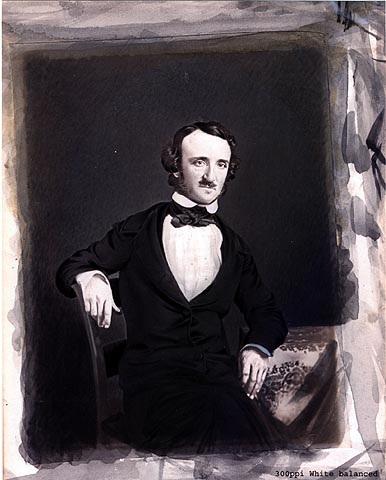
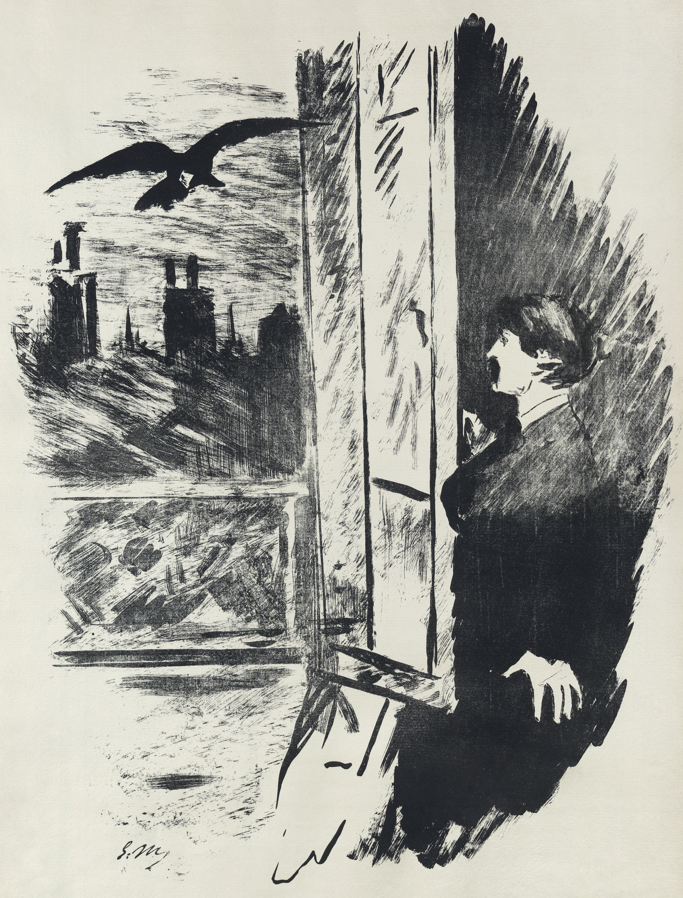
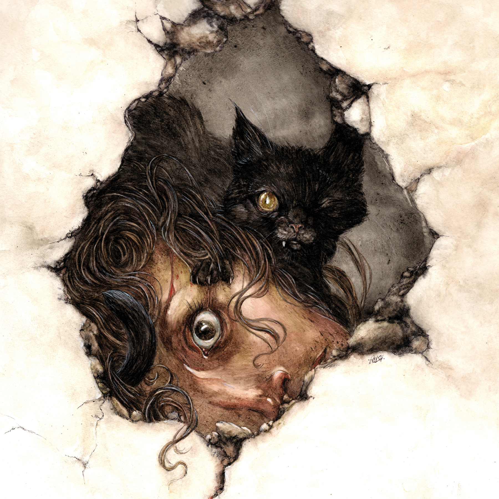

Mergulhe no horror
O antro de histórias escritas pelo autor Edgar Allan Poe.
Bem-vindo ao Nevermore, esse site foi construído com o objetivo de reunir as obras do escritor Edgar Allan Poe. O site contém alguns poemas e pequenas histórias publicadas pelo autor, que hoje estão disponíveis em domínio público após mais de um século de sua morte. Por conta disso, as obras encontram-se em seu idioma original, o inglês.

Edgar Allan Poe (nascido Edgar Poe; Boston, 19 de janeiro de 1809 – Baltimore, 7 de outubro de 1849) foi um escritor, editor e crítico literário estadunidense, integrante do romantismo em seu país. Conhecido por suas histórias que envolvem o mistério e o macabro, Poe foi um dos primeiros escritores norte-americanos de contos e é, geralmente, considerado o inventor do gênero ficção policial, também recebendo crédito por sua contribuição ao emergente gênero de ficção científica.
Explorar poesia

-
O Corvo (The Raven)
Once upon a midnight dreary, while I pondered, weak and weary
Over many a quaint and curious volume of forgotten lore,
While I nodded, nearly napping, suddenly there came a tapping,
As of some one gently rapping, rapping at my chamber door. “
“'Tis some visitor,” I muttered, “tapping at my chamber door—
Only this, and nothing more.”
Ah, distinctly I remember it was in the bleak December,
And each separate dying ember wrought its ghost upon the floor.
Eagerly I wished the morrow;—vainly I had sought to borrow
From my books surcease of sorrow—sorrow for the lost Lenore—
For the rare and radiant maiden whom the angels name Lenore—
Nameless here for evermore.And the silken sad uncertain rustling of each purple curtain
Thrilled me—filled me with fantastic terrors never felt before;
So that now, to still the beating of my heart, I stood repeating, “
“'Tis some visitor entreating entrance at my chamber door—
Some late visitor entreating entrance at my chamber door;—
This it is, and nothing more.”
Presently my soul grew stronger; hesitating then no longer,
“Sir,” said I, “or Madam, truly your forgiveness I implore;
But the fact is I was napping, and so gently you came rapping,
And so faintly you came tapping, tapping at my chamber door,
That I scarce was sure I heard you”—here I opened wide the door;—
Darkness there, and nothing more.
Deep into that darkness peering, long I stood there wondering, fearing,
Doubting, dreaming dreams no mortals ever dared to dream before;
But the silence was unbroken, and the stillness gave no token,
And the only word there spoken was the whispered word, “Lenore!”
This I whispered, and an echo murmured back the word, “Lenore!”—
Merely this, and nothing more.
Back into the chamber turning, all my soul within me burning,
Soon again I heard a tapping somewhat louder than before.
“Surely,” said I, “surely that is something at my window lattice,
Let me see, then, what thereat is, and this mystery explore—
Let my heart be still a moment and this mystery explore;—
'Tis the wind and nothing more.”
Open here I flung the shutter, when, with many a flirt and flutter,
In there stepped a stately raven of the saintly days of yore.
Not the least obeisance made he; not a minute stopped or stayed he;
But, with mien of lord or lady, perched above my chamber door—
Perched upon a bust of Pallas just above my chamber door—
Perched, and sat, and nothing more.
Then this ebony bird beguiling my sad fancy into smiling,
By the grave and stern decorum of the countenance it wore.
“Though thy crest be shorn and shaven, thou,” I said, “art sure no craven,
Ghastly grim and ancient raven wandering from the Nightly shore—
Tell me what thy lordly name is on the Night's Plutonian shore!”
Quoth the Raven, “Nevermore.”
Much I marvelled this ungainly fowl to hear discourse so plainly,
Though its answer little meaning—little relevancy bore;
For we cannot help agreeing that no living human being
Ever yet was blest with seeing bird above his chamber door—
Bird or beast upon the sculptured bust above his chamber door,
With such name as “Nevermore.”
But the Raven, sitting lonely on the placid bust, spoke only
That one word, as if his soul in that one word he did outpour.
Nothing further then he uttered—not a feather then he fluttered—
Till I scarcely more than muttered, “other friends have flown before—
On the morrow he will leave me, as my hopes have flown before.”
Then the bird said, “Nevermore.”
Startled at the stillness broken by reply so aptly spoken,
“Doubtless,” said I, “what it utters is its only stock and store,
Caught from some unhappy master whom unmerciful Disaster
Followed fast and followed faster till his songs one burden bore—
Till the dirges of his Hope that melancholy burden bore,
Of ‘Never—nevermore’.”
But the Raven still beguiling my sad fancy into smiling,
Straight I wheeled a cushioned seat in front of bird and bust and door;
Then, upon the velvet sinking, I betook myself to linking
Fancy unto fancy, thinking what this ominous bird of yore—
What this grim, ungainly, ghastly, gaunt, and ominous bird of yore
Meant in croaking “Nevermore.”
This I sat engaged in guessing, but no syllable expressing
To the fowl whose fiery eyes now burned into my bosom's core;
This and more I sat divining, with my head at ease reclining
On the cushion's velvet lining that the lamplight gloated o'er,
But whose velvet violet lining with the lamplight gloating o'er,
She shall press, ah, nevermore!
Then, methought, the air grew denser, perfumed from an unseen censer
Swung by Seraphim whose footfalls tinkled on the tufted floor.
“Wretch,” I cried, “thy God hath lent thee—by these angels he hath sent thee
Respite—respite and nepenthe, from thy memories of Lenore;
Quaff, oh quaff this kind nepenthe and forget this lost Lenore!”
Quoth the Raven, “Nevermore.”
“Prophet!” said I, “thing of evil!—prophet still, if bird or devil!—
Whether Tempter sent, or whether tempest tossed thee here ashore,
Desolate yet all undaunted, on this desert land enchanted—
On this home by horror haunted—tell me truly, I implore—
Is there—is there balm in Gilead?—tell me—tell me, I implore!”
Quoth the Raven, “Nevermore.”
“Prophet!” said I, “thing of evil!—prophet still, if bird or devil!
By that Heaven that bends above us—by that God we both adore—
Tell this soul with sorrow laden if, within the distant Aidenn,
It shall clasp a sainted maiden whom the angels name Lenore—
Clasp a rare and radiant maiden whom the angels name Lenore.”
Quoth the Raven, “Nevermore.”
“Be that word our sign in parting, bird or fiend!” I shrieked, upstarting—
“Get thee back into the tempest and the Night's Plutonian shore!
Leave no black plume as a token of that lie thy soul hath spoken!
Leave my loneliness unbroken!—quit the bust above my door!
Take thy beak from out my heart, and take thy form from off my door!”
Quoth the Raven, “Nevermore.”
And the Raven, never flitting, still is sitting, still is sitting
On the pallid bust of Pallas just above my chamber door;
And his eyes have all the seeming of a demon's that is dreaming,
And the lamplight o'er him streaming throws his shadow on the floor;
And my soul from out that shadow that lies floating on the floor
Shall be lifted—nevermore!
-
O Palácio Assombrado (The Haunted Palace)
In the greenest of our valleys
By good angels tenanted,
Once a fair and stately palace—
Radiant palace—reared its head.
In the monarch Thought’s dominion,
It stood there!
Never seraph spread a pinion
Over fabric half so fair!Banners yellow, glorious, golden,
On its roof did float and flow
(This—all this—was in the olden
Time long ago)
And every gentle air that dallied,
In that sweet day,
Along the ramparts plumed and pallid,
A wingèd odor went away.Wanderers in that happy valley,
Through two luminous windows, saw
Spirits moving musically
To a lute’s well-tunèd law,
Round about a throne where, sitting,
Porphyrogene!
In state his glory well befitting,
The ruler of the realm was seen.And all with pearl and ruby glowing
Was the fair palace door,
Through which came flowing, flowing, flowing
And sparkling evermore,
A troop of Echoes, whose sweet duty
Was but to sing,
In voices of surpassing beauty,
The wit and wisdom of their king.But evil things, in robes of sorrow,
Assailed the monarch’s high estate;
(Ah, let us mourn!—for never morrow
Shall dawn upon him, desolate!)
And round about his home the glory
That blushed and bloomed
Is but a dim-remembered story
Of the old time entombed.And travellers, now, within that valley,
Through the red-litten windows see
Vast forms that move fantastically
To a discordant melody;
While, like a ghastly rapid river,
Through the pale door
A hideous throng rush out forever,
And laugh—but smile no more. -
A Cidade do Mar (The City in the Sea)
Lo! Death has reared himself a throne
In a strange city lying alone
Far down within the dim West,
Where the good and the bad and the worst and the best
Have gone to their eternal rest.
There shrines and palaces and towers
(Time-eaten towers and tremble not!)
Resemble nothing that is ours.
Around, by lifting winds forgot,
Resignedly beneath the sky
The melancholy waters lie.No rays from the holy Heaven come down
On the long night-time of that town;
But light from out the lurid sea
Streams up the turrets silently—
Gleams up the pinnacles far and free—
Up domes—up spires—up kingly halls—
Up fanes—up Babylon-like walls—
Up shadowy long-forgotten bowers
Of sculptured ivy and stone flowers—
Up many and many a marvellous shrine
Whose wreathed friezes intertwine
The viol, the violet, and the vine.Resignedly beneath the sky
The melancholy waters lie.
So blend the turrets and shadows there
That all seem pendulous in air,
While from a proud tower in the town
Death looks gigantically down.There open fanes and gaping graves
Yawn level with the luminous waves;
But not the riches there that lie
In each idol’s diamond eye—
Not the gaily-jewelled dead
Tempt the waters from their bed;
For no ripples curl, alas!
Along that wilderness of glass—
No swellings tell that winds may be
Upon some far-off happier sea—
No heavings hint that winds have been
On seas less hideously serene.But lo, a stir is in the air!
The wave—there is a movement there!
As if the towers had thrust aside,
In slightly sinking, the dull tide—
As if their tops had feebly given
A void within the filmy Heaven.
The waves have now a redder glow—
The hours are breathing faint and low—
And when, amid no earthly moans,
Down, down that town shall settle hence,
Hell, rising from a thousand thrones,
Shall do it reverence.
Explorar contos

-
O Gato Preto (The Black Cat)
FOR the most wild, yet most homely narrative which I am about to pen, I neither expect nor solicit belief. Mad indeed would I be to expect it, in a case where my very senses reject their own evidence. Yet, mad am I not -- and very surely do I not dream. But to-morrow I die, and to-day I would unburthen my soul. My immediate purpose is to place before the world, plainly, succinctly, and without comment, a series of mere household events. In their consequences, these events have terrified -- have tortured -- have destroyed me. Yet I will not attempt to expound them. To me, they have presented little but Horror -- to many they will seem less terrible than barroques. Hereafter, perhaps, some intellect may be found which will reduce my phantasm to the common-place -- some intellect more calm, more logical, and far less excitable than my own, which will perceive, in the circumstances I detail with awe, nothing more than an ordinary succession of very natural causes and effects.
From my infancy I was noted for the docility and humanity of my disposition. My tenderness of heart was even so conspicuous as to make me the jest of my companions. I was especially fond of animals, and was indulged by my parents with a great variety of pets. With these I spent most of my time, and never was so happy as when feeding and caressing them. This peculiarity of character grew with my growth, and, in my manhood, I derived from it one of my principal sources of pleasure. To those who have cherished an affection for a faithful and sagacious dog, I need hardly be at the trouble of explaining the nature or the intensity of the gratification thus derivable. There is something in the unselfish and self-sacrificing love of a brute, which goes directly to the heart of him who has had frequent occasion to test the paltry friendship and gossamer fidelity of mere Man.
I married early, and was happy to find in my wife a disposition not uncongenial with my own. Observing my partiality for domestic pets, she lost no opportunity of procuring those of the most agreeable kind. We had birds, gold-fish, a fine dog, rabbits, a small monkey, and a cat.
This latter was a remarkably large and beautiful animal, entirely black, and sagacious to an astonishing degree. In speaking of his intelligence, my wife, who at heart was not a little tinctured with superstition, made frequent allusion to the ancient popular notion, which regarded all black cats as witches in disguise. Not that she was ever serious upon this point -- and I mention the matter at all for no better reason than that it happens, just now, to be remembered.
Pluto -- this was the cat's name -- was my favorite pet and playmate. I alone fed him, and he attended me wherever I went about the house. It was even with difficulty that I could prevent him from following me through the streets.
Our friendship lasted, in this manner, for several years, during which my general temperament and character -- through the instrumentality of the Fiend Intemperance -- had (I blush to confess it) experienced a radical alteration for the worse. I grew, day by day, more moody, more irritable, more regardless of the feelings of others. I suffered myself to use intemperate language to my wife. At length, I even offered her personal violence. My pets, of course, were made to feel the change in my disposition. I not only neglected, but ill-used them. For Pluto, however, I still retained sufficient regard to restrain me from maltreating him, as I made no scruple of maltreating the rabbits, the monkey, or even the dog, when by accident, or through affection, they came in my way. But my disease grew upon me -- for what disease is like Alcohol ! -- and at length even Pluto, who was now becoming old, and consequently somewhat peevish -- even Pluto began to experience the effects of my ill temper.
One night, returning home, much intoxicated, from one of my haunts about town, I fancied that the cat avoided my presence. I seized him; when, in his fright at my violence, he inflicted a slight wound upon my hand with his teeth. The fury of a demon instantly possessed me. I knew myself no longer. My original soul seemed, at once, to take its flight from my body; and a more than fiendish malevolence, gin-nurtured, thrilled every fibre of my frame. I took from my waistcoat-pocket a pen-knife, opened it, grasped the poor beast by the throat, and deliberately cut one of its eyes from the socket ! I blush, I burn, I shudder, while I pen the damnable atrocity.
When reason returned with the morning -- when I had slept off the fumes of the night's debauch -- I experienced a sentiment half of horror, half of remorse, for the crime of which I had been guilty; but it was, at best, a feeble and equivocal feeling, and the soul remained untouched. I again plunged into excess, and soon drowned in wine all memory of the deed.
In the meantime the cat slowly recovered. The socket of the lost eye presented, it is true, a frightful appearance, but he no longer appeared to suffer any pain. He went about the house as usual, but, as might be expected, fled in extreme terror at my approach. I had so much of my old heart left, as to be at first grieved by this evident dislike on the part of a creature which had once so loved me. But this feeling soon gave place to irritation. And then came, as if to my final and irrevocable overthrow, the spirit of PERVERSENESS. Of this spirit philosophy takes no account. Yet I am not more sure that my soul lives, than I am that perverseness is one of the primitive impulses of the human heart -- one of the indivisible primary faculties, or sentiments, which give direction to the character of Man. Who has not, a hundred times, found himself committing a vile or a silly action, for no other reason than because he knows he should not? Have we not a perpetual inclination, in the teeth of our best judgment, to violate that which is Law, merely because we understand it to be such? This spirit of perverseness, I say, came to my final overthrow. It was this unfathomable longing of the soul to vex itself -- to offer violence to its own nature -- to do wrong for the wrong's sake only -- that urged me to continue and finally to consummate the injury I had inflicted upon the unoffending brute. One morning, in cool blood, I slipped a noose about its neck and hung it to the limb of a tree; -- hung it with the tears streaming from my eyes, and with the bitterest remorse at my heart; -- hung it because I knew that it had loved me, and because I felt it had given me no reason of offence; -- hung it because I knew that in so doing I was committing a sin -- a deadly sin that would so jeopardize my immortal soul as to place it -- if such a thing were possible -- even beyond the reach of the infinite mercy of the Most Merciful and Most Terrible God.
On the night of the day on which this cruel deed was done, I was aroused from sleep by the cry of fire. The curtains of my bed were in flames. The whole house was blazing. It was with great difficulty that my wife, a servant, and myself, made our escape from the conflagration. The destruction was complete. My entire worldly wealth was swallowed up, and I resigned myself thenceforward to despair.
I am above the weakness of seeking to establish a sequence of cause and effect, between the disaster and the atrocity. But I am detailing a chain of facts -- and wish not to leave even a possible link imperfect. On the day succeeding the fire, I visited the ruins. The walls, with one exception, had fallen in. This exception was found in a compartment wall, not very thick, which stood about the middle of the house, and against which had rested the head of my bed. The plastering had here, in great measure, resisted the action of the fire -- a fact which I attributed to its having been recently spread. About this wall a dense crowd were collected, and many persons seemed to be examining a particular portion of it with very minute and eager attention. The words "strange!" "singular!" and other similar expressions, excited my curiosity. I approached and saw, as if graven in bas relief upon the white surface, the figure of a gigantic cat. The impression was given with an accuracy truly marvellous. There was a rope about the animal's neck.
When I first beheld this apparition -- for I could scarcely regard it as less -- my wonder and my terror were extreme. But at length reflection came to my aid. The cat, I remembered, had been hung in a garden adjacent to the house. Upon the alarm of fire, this garden had been immediately filled by the crowd -- by some one of whom the animal must have been cut from the tree and thrown, through an open window, into my chamber. This had probably been done with the view of arousing me from sleep. The falling of other walls had compressed the victim of my cruelty into the substance of the freshly-spread plaster; the lime of which, with the flames, and the ammonia from the carcass, had then accomplished the portraiture as I saw it.
Although I thus readily accounted to my reason, if not altogether to my conscience, for the startling fact just detailed, it did not the less fail to make a deep impression upon my fancy. For months I could not rid myself of the phantasm of the cat; and, during this period, there came back into my spirit a half-sentiment that seemed, but was not, remorse. I went so far as to regret the loss of the animal, and to look about me, among the vile haunts which I now habitually frequented, for another pet of the same species, and of somewhat similar appearance, with which to supply its place.
One night as I sat, half stupified, in a den of more than infamy, my attention was suddenly drawn to some black object, reposing upon the head of one of the immense hogsheads of Gin, or of Rum, which constituted the chief furniture of the apartment. I had been looking steadily at the top of this hogshead for some minutes, and what now caused me surprise was the fact that I had not sooner perceived the object thereupon. I approached it, and touched it with my hand. It was a black cat -- a very large one -- fully as large as Pluto, and closely resembling him in every respect but one. Pluto had not a white hair upon any portion of his body; but this cat had a large, although indefinite splotch of white, covering nearly the whole region of the breast.
Upon my touching him, he immediately arose, purred loudly, rubbed against my hand, and appeared delighted with my notice. This, then, was the very creature of which I was in search. I at once offered to purchase it of the landlord; but this person made no claim to it -- knew nothing of it -- had never seen it before.
I continued my caresses, and, when I prepared to go home, the animal evinced a disposition to accompany me. I permitted it to do so; occasionally stooping and patting it as I proceeded. When it reached the house it domesticated itself at once, and became immediately a great favorite with my wife.
For my own part, I soon found a dislike to it arising within me. This was just the reverse of what I had anticipated; but -- I know not how or why it was -- its evident fondness for myself rather disgusted and annoyed. By slow degrees, these feelings of disgust and annoyance rose into the bitterness of hatred. I avoided the creature; a certain sense of shame, and the remembrance of my former deed of cruelty, preventing me from physically abusing it. I did not, for some weeks, strike, or otherwise violently ill use it; but gradually -- very gradually -- I came to look upon it with unutterable loathing, and to flee silently from its odious presence, as from the breath of a pestilence.
What added, no doubt, to my hatred of the beast, was the discovery, on the morning after I brought it home, that, like Pluto, it also had been deprived of one of its eyes. This circumstance, however, only endeared it to my wife, who, as I have already said, possessed, in a high degree, that humanity of feeling which had once been my distinguishing trait, and the source of many of my simplest and purest pleasures.
With my aversion to this cat, however, its partiality for myself seemed to increase. It followed my footsteps with a pertinacity which it would be difficult to make the reader comprehend. Whenever I sat, it would crouch beneath my chair, or spring upon my knees, covering me with its loathsome caresses. If I arose to walk it would get between my feet and thus nearly throw me down, or, fastening its long and sharp claws in my dress, clamber, in this manner, to my breast. At such times, although I longed to destroy it with a blow, I was yet withheld from so doing, partly by a memory of my former crime, but chiefly -- let me confess it at once -- by absolute dread of the beast.
This dread was not exactly a dread of physical evil -- and yet I should be at a loss how otherwise to define it. I am almost ashamed to own -- yes, even in this felon's cell, I am almost ashamed to own -- that the terror and horror with which the animal inspired me, had been heightened by one of the merest chimæras it would be possible to conceive. My wife had called my attention, more than once, to the character of the mark of white hair, of which I have spoken, and which constituted the sole visible difference between the strange beast and the one I had destroyed. The reader will remember that this mark, although large, had been originally very indefinite; but, by slow degrees -- degrees nearly imperceptible, and which for a long time my Reason struggled to reject as fanciful -- it had, at length, assumed a rigorous distinctness of outline. It was now the representation of an object that I shudder to name -- and for this, above all, I loathed, and dreaded, and would have rid myself of the monster had I dared -- it was now, I say, the image of a hideous -- of a ghastly thing -- of the GALLOWS ! -- oh, mournful and terrible engine of Horror and of Crime -- of Agony and of Death !
And now was I indeed wretched beyond the wretchedness of mere Humanity. And a brute beast -- whose fellow I had contemptuously destroyed -- a brute beast to work out for me -- for me a man, fashioned in the image of the High God -- so much of insufferable wo! Alas! neither by day nor by night knew I the blessing of Rest any more! During the former the creature left me no moment alone; and, in the latter, I started, hourly, from dreams of unutterable fear, to find the hot breath of the thing upon my face, and its vast weight -- an incarnate Night-Mare that I had no power to shake off -- incumbent eternally upon my heart !
Beneath the pressure of torments such as these, the feeble remnant of the good within me succumbed. Evil thoughts became my sole intimates -- the darkest and most evil of thoughts. The moodiness of my usual temper increased to hatred of all things and of all mankind; while, from the sudden, frequent, and ungovernable outbursts of a fury to which I now blindly abandoned myself, my uncomplaining wife, alas! was the most usual and the most patient of sufferers.
One day she accompanied me, upon some household errand, into the cellar of the old building which our poverty compelled us to inhabit. The cat followed me down the steep stairs, and, nearly throwing me headlong, exasperated me to madness. Uplifting an axe, and forgetting, in my wrath, the childish dread which had hitherto stayed my hand, I aimed a blow at the animal which, of course, would have proved instantly fatal had it descended as I wished. But this blow was arrested by the hand of my wife. Goaded, by the interference, into a rage more than demoniacal, I withdrew my arm from her grasp and buried the axe in her brain. She fell dead upon the spot, without a groan.
This hideous murder accomplished, I set myself forthwith, and with entire deliberation, to the task of concealing the body. I knew that I could not remove it from the house, either by day or by night, without the risk of being observed by the neighbors. Many projects entered my mind. At one period I thought of cutting the corpse into minute fragments, and destroying them by fire. At another, I resolved to dig a grave for it in the floor of the cellar. Again, I deliberated about casting it in the well in the yard -- about packing it in a box, as if merchandize, with the usual arrangements, and so getting a porter to take it from the house. Finally I hit upon what I considered a far better expedient than either of these. I determined to wall it up in the cellar -- as the monks of the middle ages are recorded to have walled up their victims.
For a purpose such as this the cellar was well adapted. Its walls were loosely constructed, and had lately been plastered throughout with a rough plaster, which the dampness of the atmosphere had prevented from hardening. Moreover, in one of the walls was a projection, caused by a false chimney, or fireplace, that had been filled up, and made to resemble the rest of the cellar. I made no doubt that I could readily displace the bricks at this point, insert the corpse, and wall the whole up as before, so that no eye could detect any thing suspicious.
And in this calculation I was not deceived. By means of a crow-bar I easily dislodged the bricks, and, having carefully deposited the body against the inner wall, I propped it in that position, while, with little trouble, I re-laid the whole structure as it originally stood. Having procured mortar, sand, and hair, with every possible precaution, I prepared a plaster which could not be distinguished from the old, and with this I very carefully went over the new brick-work. When I had finished, I felt satisfied that all was right. The wall did not present the slightest appearance of having been disturbed. The rubbish on the floor was picked up with the minutest care. I looked around triumphantly, and said to myself -- "Here at least, then, my labor has not been in vain."
My next step was to look for the beast which had been the cause of so much wretchedness; for I had, at length, firmly resolved to put it to death. Had I been able to meet with it, at the moment, there could have been no doubt of its fate; but it appeared that the crafty animal had been alarmed at the violence of my previous anger, and forebore to present itself in my present mood. It is impossible to describe, or to imagine, the deep, the blissful sense of relief which the absence of the detested creature occasioned in my bosom. It did not make its appearance during the night -- and thus for one night at least, since its introduction into the house, I soundly and tranquilly slept; aye, slept even with the burden of murder upon my soul!
The second and the third day passed, and still my tormentor came not. Once again I breathed as a freeman. The monster, in terror, had fled the premises forever! I should behold it no more! My happiness was supreme! The guilt of my dark deed disturbed me but little. Some few inquiries had been made, but these had been readily answered. Even a search had been instituted -- but of course nothing was to be discovered. I looked upon my future felicity as secured.
Upon the fourth day of the assassination, a party of the police came, very unexpectedly, into the house, and proceeded again to make rigorous investigation of the premises. Secure, however, in the inscrutability of my place of concealment, I felt no embarrassment whatever. The officers bade me accompany them in their search. They left no nook or corner unexplored. At length, for the third or fourth time, they descended into the cellar. I quivered not in a muscle. My heart beat calmly as that of one who slumbers in innocence. I walked the cellar from end to end. I folded my arms upon my bosom, and roamed easily to and fro. The police were thoroughly satisfied and prepared to depart. The glee at my heart was too strong to be restrained. I burned to say if but one word, by way of triumph, and to render doubly sure their assurance of my guiltlessness.
"Gentlemen," I said at last, as the party ascended the steps, "I delight to have allayed your suspicions. I wish you all health, and a little more courtesy. By the bye, gentlemen, this -- this is a very well constructed house." (In the rabid desire to say something easily, I scarcely knew what I uttered at all.) -- "I may say an excellently well constructed house. These walls -- are you going, gentlemen? -- these walls are solidly put together;" and here, through the mere phrenzy of bravado, I rapped heavily, with a cane which I held in my hand, upon that very portion of the brick-work behind which stood the corpse of the wife of my bosom.
But may God shield and deliver me from the fangs of the Arch-Fiend ! No sooner had the reverberation of my blows sunk into silence, than I was answered by a voice from within the tomb! -- by a cry, at first muffled and broken, like the sobbing of a child, and then quickly swelling into one long, loud, and continuous scream, utterly anomalous and inhuman -- a howl -- a wailing shriek, half of horror and half of triumph, such as might have arisen only out of hell, conjointly from the throats of the dammed in their agony and of the demons that exult in the damnation.
Of my own thoughts it is folly to speak. Swooning, I staggered to the opposite wall. For one instant the party upon the stairs remained motionless, through extremity of terror and of awe. In the next, a dozen stout arms were toiling at the wall. It fell bodily. The corpse, already greatly decayed and clotted with gore, stood erect before the eyes of the spectators. Upon its head, with red extended mouth and solitary eye of fire, sat the hideous beast whose craft had seduced me into murder, and whose informing voice had consigned me to the hangman. I had walled the monster up within the tomb!
-
Os Assassinatos da Rua Morgue (The Murders in the Rue Morgue)
THE mental features discoursed of as the analytical, are, in themselves, but little susceptible of analysis. We appreciate them only in their effects. We know of them, among other things, that they are always to their possessor, when inordinately possessed, a source of the liveliest enjoyment. As the strong man exults in his physical ability, delighting in such exercises as call his muscles into action, so glories the analyst in that moral activity which disentangles. He derives pleasure from even the most trivial occupations bringing his talent into play. He is fond of enigmas, of conundrums, of hieroglyphics; exhibiting in his solutions of each a degree of acumen which appears to the ordinary apprehension præternatural. His results, brought about by the very soul and essence of method, have, in truth, the whole air of intuition.
The faculty of re-solution is possibly much invigorated by mathematical study, and especially by that highest branch of it which, unjustly, and merely on account of its retrograde operations, has been called, as if par excellence, analysis. Yet to calculate is not in itself to analyse. A chess-player, for example, does the one without effort at the other. It follows that the game of chess, in its effects upon mental character, is greatly misunderstood. I am not now writing a treatise, but simply prefacing a somewhat peculiar narrative by observations very much at random; I will, therefore, take occasion to assert that the higher powers of the reflective intellect are more decidedly and more usefully tasked by the unostentatious game of draughts than by all the elaborate frivolity of chess. In this latter, where the pieces have different and bizarre motions, with various and variable values, what is only complex is mistaken (a not unusual error) for what is profound. The attention is here called powerfully into play. If it flag for an instant, an oversight is committed, resulting in injury or defeat. The possible moves being not only manifold but involute, the chances of such oversights are multiplied; and in nine cases out of ten it is the more concentrative rather than the more acute player who conquers. In draughts, on the contrary, where the moves are unique and have but little variation, the probabilities of inadvertence are diminished, and the mere attention being left comparatively unemployed, what advantages are obtained by either party are obtained by superior acumen. To be less abstract --Let us suppose a game of draughts where the pieces are reduced to four kings, and where, of course, no oversight is to be expected. It is obvious that here the victory can be decided (the players being at all equal) only by some recherche movement, the result of some strong exertion of the intellect. Deprived of ordinary resources, the analyst throws himself into the spirit of his opponent, identifies himself therewith, and not unfrequently sees thus, at a glance, the sole methods (sometimes indeed absurdly simple ones) by which he may seduce into error or hurry into miscalculation.
Whist has long been noted for its influence upon what is termed the calculating power; and men of the highest order of intellect have been known to take an apparently unaccountable delight in it, while eschewing chess as frivolous. Beyond doubt there is nothing of a similar nature so greatly tasking the faculty of analysis. The best chess-player in Christendom may be little more than the best player of chess; but proficiency in whist implies capacity for success in all those more important undertakings where mind struggles with mind. When I say proficiency, I mean that perfection in the game which includes a comprehension of all the sources whence legitimate advantage may be derived. These are not only manifold but multiform, and lie frequently among recesses of thought altogether inaccessible to the ordinary understanding. To observe attentively is to remember distinctly; and, so far, the concentrative chess-player will do very well at whist; while the rules of Hoyle (themselves based upon the mere mechanism of the game) are sufficiently and generally comprehensible. Thus to have a retentive memory, and to proceed by "the book," are points commonly regarded as the sum total of good playing. But it is in matters beyond the limits of mere rule that the skill of the analyst is evinced. He makes, in silence, a host of observations and inferences. So, perhaps, do his companions; and the difference in the extent of the information obtained, lies not so much in the validity of the inference as in the quality of the observation. The necessary knowledge is that of what to observe. Our player confines himself not at all; nor, because the game is the object, does he reject deductions from things external to the game. He examines the countenance of his partner, comparing it carefully with that of each of his opponents. He considers the mode of assorting the cards in each hand; often counting trump by trump, and honor by honor, through the glances bestowed by their holders upon each. He notes every variation of face as the play progresses, gathering a fund of thought from the differences in the expression of certainty, of surprise, of triumph, or of chagrin. From the manner of gathering up a trick he judges whether the person taking it can make another in the suit. He recognises what is played through feint, by the air with which it is thrown upon the table. A casual or inadvertent word; the accidental dropping or turning of a card, with the accompanying anxiety or carelessness in regard to its concealment; the counting of the tricks, with the order of their arrangement; embarrassment, hesitation, eagerness or trepidation --all afford, to his apparently intuitive perception, indications of the true state of affairs. The first two or three rounds having been played, he is in full possession of the contents of each hand, and thenceforward puts down his cards with as absolute a precision of purpose as if the rest of the party had turned outward the faces of their own.
The analytical power should not be confounded with simple ingenuity; for while the analyst is necessarily ingenious, the ingenious man is often remarkably incapable of analysis. The constructive or combining power, by which ingenuity is usually manifested, and to which the phrenologists (I believe erroneously) have assigned a separate organ, supposing it a primitive faculty, has been so frequently seen in those whose intellect bordered otherwise upon idiocy, as to have attracted general observation among writers on morals. Between ingenuity and the analytic ability there exists a difference far greater, indeed, than that between the fancy and the imagination, but of a character very strictly analogous. It will be found, in fact, that the ingenious are always fanciful, and the truly imaginative never otherwise than analytic.
The narrative which follows will appear to the reader somewhat in the light of a commentary upon the propositions just advanced.
Residing in Paris during the spring and part of the summer of 18--, I there became acquainted with a Monsieur C. Auguste Dupin. This young gentleman was of an excellent -- indeed of an illustrious family, but, by a variety of untoward events, had been reduced to such poverty that the energy of his character succumbed beneath it, and he ceased to bestir himself in the world, or to care for the retrieval of his fortunes. By courtesy of his creditors, there still remained in his possession a small remnant of his patrimony; and, upon the income arising from this, he managed, by means of a rigorous economy, to procure the necessaries of life, without troubling himself about its superfluities. Books, indeed, were his sole luxuries, and in Paris these are easily obtained.
Our first meeting was at an obscure library in the Rue Montmartre, where the accident of our both being in search of the same very rare and very remarkable volume, brought us into closer communion. We saw each other again and again. I was deeply interested in the little family history which he detailed to me with all that candor which a Frenchman indulges whenever mere self is his theme. I was astonished, too, at the vast extent of his reading; and, above all, I felt my soul enkindled within me by the wild fervor, and the vivid freshness of his imagination. Seeking in Paris the objects I then sought, I felt that the society of such a man would be to me a treasure beyond price; and this feeling I frankly confided to him. It was at length arranged that we should live together during my stay in the city; and as my worldly circumstances were somewhat less embarrassed than his own, I was permitted to be at the expense of renting, and furnishing in a style which suited the rather fantastic gloom of our common temper, a time-eaten and grotesque mansion, long deserted through superstitions into which we did not inquire, and tottering to its fall in a retired and desolate portion of the Faubourg St. Germain.
Had the routine of our life at this place been known to the world, we should have been regarded as madmen --although, perhaps, as madmen of a harmless nature. Our seclusion was perfect. We admitted no visitors. Indeed the locality of our retirement had been carefully kept a secret from my own former associates; and it had been many years since Dupin had ceased to know or be known in Paris. We existed within ourselves alone.
It was a freak of fancy in my friend (for what else shall I call it?) to be enamored of the Night for her own sake; and into this bizarrerie, as into all his others, I quietly fell; giving myself up to his wild whims with a perfect abandon. The sable divinity would not herself dwell with us always; but we could counterfeit her presence. At the first dawn of the morning we closed all the messy shutters of our old building; lighting a couple of tapers which, strongly perfumed, threw out only the ghastliest and feeblest of rays. By the aid of these we then busied our souls in dreams --reading, writing, or conversing, until warned by the clock of the advent of the true Darkness. Then we sallied forth into the streets, arm in arm, continuing the topics of the day, or roaming far and wide until a late hour, seeking, amid the wild lights and shadows of the populous city, that infinity of mental excitement which quiet observation can afford.
At such times I could not help remarking and admiring (although from his rich ideality I had been prepared to expect it) a peculiar analytic ability in Dupin. He seemed, too, to take an eager delight in its exercise --if not exactly in its display --and did not hesitate to confess the pleasure thus derived. He boasted to me, with a low chuckling laugh, that most men, in respect to himself, wore windows in their bosoms, and was wont to follow up such assertions by direct and very startling proofs of his intimate knowledge of my own. His manner at these moments was frigid and abstract; his eyes were vacant in expression; while his voice, usually a rich tenor, rose into a treble which would have sounded petulantly but for the deliberateness and entire distinctness of the enunciation. Observing him in these moods, I often dwelt meditatively upon the old philosophy of the Bi-Part Soul, and amused myself with the fancy of a double Dupin --the creative and the resolvent.
Let it not be supposed, from what I have just said, that I am detailing any mystery, or penning any romance. What I have described in the Frenchman, was merely the result of an excited, or perhaps of a diseased intelligence. But of the character of his remarks at the periods in question an example will best convey the idea.
We were strolling one night down a long dirty street, in the vicinity of the Palais Royal. Being both, apparently, occupied with thought, neither of us had spoken a syllable for fifteen minutes at least. All at once Dupin broke forth with these words:
"He is a very little fellow, that's true, and would do better for the Théâtre des Variétés."
"There can be no doubt of that," I replied unwittingly, and not at first observing (so much had I been absorbed in reflection) the extraordinary manner in which the speaker had chimed in with my meditations. In an instant afterward I recollected myself, and my astonishment was profound.
"Dupin," said I, gravely, "this is beyond my comprehension. I do not hesitate to say that I am amazed, and can scarcely credit my senses. How was it possible you should know I was thinking of ___ ?" Here I paused, to ascertain beyond a doubt whether he really knew of whom I thought.
___ "of Chantilly," said he, "why do you pause? You were remarking to yourself that his diminutive figure unfitted him for tragedy."
This was precisely what had formed the subject of my reflections. Chantilly was a quondam cobbler of the Rue St. Denis, who, becoming stage-mad, had attempted the rôle of Xerxes, in Crébillon's tragedy so called, and been notoriously Pasquinaded for his pains.
"Tell me, for Heaven's sake," I exclaimed, "the method --if method there is --by which you have been enabled to fathom my soul in this matter." In fact I was even more startled than I would have been willing to express.
"It was the fruiterer," replied my friend, "who brought you to the conclusion that the mender of soles was not of sufficient height for Xerxes et id genus omne."
"The fruiterer! --you astonish me --I know no fruiterer whomsoever."
"The man who ran up against you as we entered the street --it may have been fifteen minutes ago."
I now remembered that, in fact, a fruiterer, carrying upon his head a large basket of apples, had nearly thrown me down, by accident, as we passed from the Rue C___ into the thoroughfare where we stood; but what this had to do with Chantilly I could not possibly understand.
There was not a particle of charlatanerie about Dupin. "I will explain," he said, "and that you may comprehend all clearly, we will first retrace the course of your meditations, from the moment in which I spoke to you until that of the rencontre with the fruiterer in question. The larger links of the chain run thus --Chantilly, Orion, Dr. Nichols, Epicurus, Stereotomy, the street stones, the fruiterer."
There are few persons who have not, at some period of their lives, amused themselves in retracing the steps by which particular conclusions of their own minds have been attained. The occupation is often full of interest; and he who attempts it for the first time is astonished by the apparently illimitable distance and incoherence between the starting-point and the goal. What, then, must have been my amazement when I heard the Frenchman speak what he had just spoken, and when I could not help acknowledging that he had spoken the truth. He continued:
"We had been talking of horses, if I remember aright, just before leaving the Rue C___. This was the last subject we discussed. As we crossed into this street, a fruiterer, with a large basket upon his head, brushing quickly past us, thrust you upon a pile of paving-stones collected at a spot where the causeway is undergoing repair. You stepped upon one of the loose fragments, slipped, slightly strained your ankle, appeared vexed or sulky, muttered a few words, turned to look at the pile, and then proceeded in silence. I was not particularly attentive to what you did; but observation has become with me, of late, a species of necessity.
"You kept your eyes upon the ground --glancing, with a petulant expression, at the holes and ruts in the pavement, (so that I saw you were still thinking of the stones,) until we reached the little alley called Lamartine, which has been paved, by way of experiment, with the overlapping and riveted blocks. Here your countenance brightened up, and, perceiving your lips move, I could not doubt that you murmured the word 'stereotomy,' a term very affectedly applied to this species of pavement. I knew that you could not say to yourself 'stereotomy' without being brought to think of atomies, and thus of the theories of Epicurus; and since, when we discussed this subject not very long ago, I mentioned to you how singularly, yet with how little notice, the vague guesses of that noble Greek had met with confirmation in the late nebular cosmogony, I felt that you could not avoid casting your eyes upward to the great nebula in Orion, and I certainly expected that you would do so. You did look up; and I was now assured that I had correctly followed your steps. But in that bitter tirade upon Chantilly, which appeared in yesterday's 'Musée,' the satirist, making some disgraceful allusions to the cobbler's change of name upon assuming the buskin, quoted a Latin line about which we have often conversed. I mean the line
Perdidit antiquum litera prima sonum
I had told you that this was in reference to Orion, formerly written Urion; and, from certain pungencies connected with this explanation, I was aware that you could not have forgotten it. It was clear, therefore, that you would not fail to combine the two ideas of Orion and Chantilly. That you did combine them I saw by the character of the smile which passed over your lips. You thought of the poor cobbler's immolation. So far, you had been stooping in your gait; but now I saw you draw yourself up to your full height. I was then sure that you reflected upon the diminutive figure of Chantilly. At this point I interrupted your meditations to remark that as, in fact, he was a very little fellow --that Chantilly --he would do better at the Théâtre des Variétés."
Not long after this, we were looking over an evening edition of the "Gazette des Tribunaux," when the following paragraphs arrested our attention.
"EXTRAORDINARY MURDERS. --This morning, about three o'clock, the inhabitants of the Quartier St. Roch were aroused from sleep by a succession of terrific shrieks, issuing, apparently, from the fourth story of a house in the Rue Morgue, known to be in the sole occupancy of one Madame L'Espanaye, and her daughter, Mademoiselle Camille L'Espanaye. After some delay, occasioned by a fruitless attempt to procure admission in the usual manner, the gateway was broken in with a crowbar, and eight or ten of the neighbors entered, accompanied by two gendarmes. By this time the cries had ceased; but, as the party rushed up the first flight of stairs, two or more rough voices, in angry contention, were distinguished, and seemed to proceed from the upper part of the house. As the second landing was reached, these sounds, also, had ceased, and everything remained perfectly quiet. The party spread themselves, and hurried from room to room. Upon arriving at a large back chamber in the fourth story, (the door of which, being found locked, with the key inside, was forced open,) a spectacle presented itself which struck every one present not less with horror than with astonishment.
"The apartment was in the wildest disorder --the furniture broken and thrown about in all directions. There was only one bedstead; and from this the bed had been removed, and thrown into the middle of the floor. On a chair lay a razor, besmeared with blood. On the hearth were two or three long and thick tresses of grey human hair, also dabbled in blood, and seeming to have been pulled out by the roots. Upon the floor were found four Napoleons, an ear-ring of topaz, three large silver spoons, three smaller of métal d'Alger, and two bags, containing nearly four thousand francs in gold. The drawers of a bureau, which stood in one corner, were open, and had been, apparently, rifled, although many articles still remained in them. A small iron safe was discovered under the bed (not under the bedstead). It was open, with the key still in the door. It had no contents beyond a few old letters, and other papers of little consequence.
"Of Madame L'Espanaye no traces were here seen; but an unusual quantity of soot being observed in the fire-place, a search was made in the chimney, and (horrible to relate!) the corpse of the daughter, head downward, was dragged therefrom; it having been thus forced up the narrow aperture for a considerable distance. The body was quite warm. Upon examining it, many excoriations were perceived, no doubt occasioned by the violence with which it had been thrust up and disengaged. Upon the face were many severe scratches, and, upon the throat, dark bruises, and deep indentations of finger nails, as if the deceased had been throttled to death.
"After a thorough investigation of every portion of the house, without farther discovery, the party made its way into a small paved yard in the rear of the building, where lay the corpse of the old lady, with her throat so entirely cut that, upon an attempt to raise her, the head fell off. The body, as well as the head, was fearfully mutilated --the former so much so as scarcely to retain any semblance of humanity.
"To this horrible mystery there is not as yet, we believe, the slightest clew."
The next day's paper had these additional particulars.
"The Tragedy in the Rue Morgue. Many individuals have been examined in relation to this most extraordinary and frightful affair." [The word 'affaire' has not yet, in France, that levity of import which it conveys with us,] "but nothing whatever has transpired to throw light upon it. We give below all the material testimony elicited.
"Pauline Dubourg, laundress, deposes that she has known both the deceased for three years, having washed for them during that period. The old lady and her daughter seemed on good terms --very affectionate towards each other. They were excellent pay. Could not speak in regard to their mode or means of living. Believed that Madame L. told fortunes for a living. Was reputed to have money put by. Never met any persons in the house when she called for the clothes or took them home. Was sure that they had no servant in employ. There appeared to be no furniture in any part of the building except in the fourth story.
"Pierre Moreau, tobacconist, deposes that he has been in the habit of selling small quantities of tobacco and snuff to Madame L'Espanaye for nearly four years. Was born in the neighborhood, and has always resided there. The deceased and her daughter had occupied the house in which the corpses were found, for more than six years. It was formerly occupied by a jeweller, who under-let the upper rooms to various persons. The house was the property of Madame L. She became dissatisfied with the abuse of the premises by her tenant, and moved into them herself, refusing to let any portion. The old lady was childish. Witness had seen the daughter some five or six times during the six years. The two lived an exceedingly retired life --were reputed to have money. Had heard it said among the neighbors that Madame L. told fortunes --did not believe it. Had never seen any person enter the door except the old lady and her daughter, a porter once or twice, and a physician some eight or ten times.
"Many other persons, neighbors, gave evidence to the same effect. No one was spoken of as frequenting the house. It was not known whether there were any living connexions of Madame L. and her daughter. The shutters of the front windows were seldom opened. Those in the rear were always closed, with the exception of the large back room, fourth story. The house was a good house --not very old.
"Isidore Musèt, gendarme, deposes that he was called to the house about three o'clock in the morning, and found some twenty or thirty persons at the gateway, endeavoring to gain admittance. Forced it open, at length, with a bayonet --not with a crowbar. Had but little difficulty in getting it open, on account of its being a double or folding gate, and bolted neither at bottom nor top. The shrieks were continued until the gate was forced --and then suddenly ceased. They seemed to be screams of some person (or persons) in great agony --were loud and drawn out, not short and quick. Witness led the way up stairs. Upon reaching the first landing, heard two voices in loud and angry contention --the one a gruff voice, the other much shriller --a very strange voice. Could distinguish some words of the former, which was that of a Frenchman. Was positive that it was not a woman's voice. Could distinguish the words 'sacré' and 'diable.' The shrill voice was that of a foreigner. Could not be sure whether it was the voice of a man or of a woman. Could not make out what was said, but believed the language to be Spanish. The state of the room and of the bodies was described by this witness as we described them yesterday.
"Henri Duval, a neighbor, and by trade a silver-smith, deposes that he was one of the party who first entered the house. Corroborates the testimony of Musèt in general. As soon as they forced an entrance, they reclosed the door, to keep out the crowd, which collected very fast, notwithstanding the lateness of the hour. The shrill voice, this witness thinks, was that of an Italian. Was certain it was not French. Could not be sure that it was a man's voice. It might have been a woman's. Was not acquainted with the Italian language. Could not distinguish the words, but was convinced by the intonation that the speaker was an Italian. Knew Madame L. and her daughter. Had conversed with both frequently. Was sure that the shrill voice was not that of either of the deceased.
"___ Odenheimer, restaurateur. This witness volunteered his testimony. Not speaking French, was examined through an interpreter. Is a native of Amsterdam. Was passing the house at the time of the shrieks. They lasted for several minutes --probably ten. They were long and loud --very awful and distressing. Was one of those who entered the building. Corroborated the previous evidence in every respect but one. Was sure that the shrill voice was that of a man --of a Frenchman. Could not distinguish the words uttered. They were loud and quick --unequal --spoken apparently in fear as well as in anger. The voice was harsh --not so much shrill as harsh. Could not call it a shrill voice. The gruff voice said repeatedly 'sacré,' 'diable,' and once 'mon Dieu.'
"Jules Mignaud, banker, of the firm of Mignaud et Fils, Rue Deloraine. Is the elder Mignaud. Madame L'Espanaye had some property. Had opened an account with his banking house in the spring of the year ---- (eight years previously). Made frequent deposits in small sums. Had checked for nothing until the third day before her death, when she took out in person the sum of 4000 francs. This sum was paid in gold, and a clerk went home with the money.
"Adolphe Le Bon, clerk to Mignaud et Fils, deposes that on the day in question, about noon, he accompanied Madame L'Espanaye to her residence with the 4000 francs, put up in two bags. Upon the door being opened, Mademoiselle L. appeared and took from his hands one of the bags, while the old lady relieved him of the other. He then bowed and departed. Did not see any person in the street at the time. It is a bye-street --very lonely.
"William Bird, tailor deposes that he was one of the party who entered the house. Is an Englishman. Has lived in Paris two years. Was one of the first to ascend the stairs. Heard the voices in contention. The gruff voice was that of a Frenchman. Could make out several words, but cannot now remember all. Heard distinctly 'sacré' and 'mon Dieu.' There was a sound at the moment as if of several persons struggling --a scraping and scuffling sound. The shrill voice was very loud --louder than the gruff one. Is sure that it was not the voice of an Englishman. Appeared to be that of a German. Might have been a woman's voice. Does not understand German.
"Four of the above-named witnesses, being recalled, deposed that the door of the chamber in which was found the body of Mademoiselle L. was locked on the inside when the party reached it. Every thing was perfectly silent --no groans or noises of any kind. Upon forcing the door no person was seen. The windows, both of the back and front room, were down and firmly fastened from within. A door between the two rooms was closed, but not locked. The door leading from the front room into the passage was locked, with the key on the inside. A small room in the front of the house, on the fourth story, at the head of the passage, was open, the door being ajar. This room was crowded with old beds, boxes, and so forth. These were carefully removed and searched. There was not an inch of any portion of the house which was not carefully searched. Sweeps were sent up and down the chimneys. The house was a four story one, with garrets (mansardes.) A trap-door on the roof was nailed down very securely --did not appear to have been opened for years. The time elapsing between the hearing of the voices in contention and the breaking open of the room door, was variously stated by the witnesses. Some made it as short as three minutes --some as long as five. The door was opened with difficulty.
"Alfonzo Garcio, undertaker, deposes that he resides in the Rue Morgue. Is a native of Spain. Was one of the party who entered the house. Did not proceed up stairs. Is nervous, and was apprehensive of the consequences of agitation. Heard the voices in contention. The gruff voice was that of a Frenchman. Could not distinguish what was said. The shrill voice was that of an Englishman --is sure of this. Does not understand the English language, but judges by the intonation.
"Alberto Montani, confectioner, deposes that he was among the first to ascend the stairs. Heard the voices in question. The gruff voice was that of a Frenchman. Distinguished several words. The speaker appeared to be expostulating. Could not make out the words of the shrill voice. Spoke quick and unevenly. Thinks it the voice of a Russian. Corroborates the general testimony. Is an Italian. Never conversed with a native of Russia.
"Several witnesses, recalled, here testified that the chimneys of all the rooms on the fourth story were too narrow to admit the passage of a human being. By 'sweeps' were meant cylindrical sweeping-brushes, such as are employed by those who clean chimneys. These brushes were passed up and down every flue in the house. There is no back passage by which any one could have descended while the party proceeded up stairs. The body of Mademoiselle L'Espanaye was so firmly wedged in the chimney that it could not be got down until four or five of the party united their strength.
"Paul Dumas, physician, deposes that he was called to view the bodies about day-break. They were both then lying on the sacking of the bedstead in the chamber where Mademoiselle L. was found. The corpse of the young lady was much bruised and excoriated. The fact that it had been thrust up the chimney would sufficiently account for these appearances. The throat was greatly chafed. There were several deep scratches just below the chin, together with a series of livid spots which were evidently the impression of fingers. The face was fearfully discolored, and the eye-balls protruded. The tongue had been partially bitten through. A large bruise was discovered upon the pit of the stomach, produced, apparently, by the pressure of a knee. In the opinion of M. Dumas, Mademoiselle L'Espanaye had been throttled to death by some person or persons unknown. The corpse of the mother was horribly mutilated. All the bones of the right leg and arm were more or less shattered. The left tibia much splintered, as well as all the ribs of the left side. Whole body dreadfully bruised and discolored. It was not possible to say how the injuries had been inflicted. A heavy club of wood, or a broad bar of iron --a chair -- any large, heavy, and obtuse weapon would have produced such results, if wielded by the hands of a very powerful man. No woman could have inflicted the blows with any weapon. The head of the deceased, when seen by witness, was entirely separated from the body, and was also greatly shattered. The throat had evidently been cut with some very sharp instrument --probably with a razor.
"Alexandre Etienne, surgeon, was called with M. Dumas to view the bodies. Corroborated the testimony, and the opinions of M. Dumas.
"Nothing farther of importance was elicited, although several other persons were examined. A murder so mysterious, and so perplexing in all its particulars, was never before committed in Paris --if indeed a murder has been committed at all. The police are entirely at fault --an unusual occurrence in affairs of this nature. There is not, however, the shadow of a clew apparent."
The evening edition of the paper stated that the greatest excitement still continued in the Quartier St. Roch --that the premises in question had been carefully re-searched, and fresh examinations of witnesses instituted, but all to no purpose. A postscript, however, mentioned that Adolphe Le Bon had been arrested and imprisoned --although nothing appeared to criminate him, beyond the facts already detailed.
Dupin seemed singularly interested in the progress of this affair --at least so I judged from his manner, for he made no comments. It was only after the announcement that Le Bon had been imprisoned, that he asked me my opinion respecting the murders.
I could merely agree with all Paris in considering them an insoluble mystery. I saw no means by which it would be possible to trace the murderer.
"We must not judge of the means," said Dupin, "by this shell of an examination. The Parisian police, so much extolled for acumen, are cunning, but no more. There is no method in their proceedings, beyond the method of the moment. They make a vast parade of measures; but, not unfrequently, these are so ill adapted to the objects proposed, as to put us in mind of Monsieur Jourdain's calling for his robe-de-chambre --pour mieux entendre la musique. The results attained by them are not unfrequently surprising, but, for the most part, are brought about by simple diligence and activity. When these qualities are unavailing, their schemes fail. Vidocq, for example, was a good guesser, and a persevering man. But, without educated thought, he erred continually by the very intensity of his investigations. He impaired his vision by holding the object too close. He might see, perhaps, one or two points with unusual clearness, but in so doing he, necessarily, lost sight of the matter as a whole. Thus there is such a thing as being too profound. Truth is not always in a well. In fact, as regards the more important knowledge, I do believe that she is invariably superficial. The depth lies in the valleys where we seek her, and not upon the mountain-tops where she is found. The modes and sources of this kind of error are well typified in the contemplation of the heavenly bodies. To look at a star by glances --to view it in a side-long way, by turning toward it the exterior portions of the retina (more susceptible of feeble impressions of light than the interior), is to behold the star distinctly -- is to have the best appreciation of its lustre --a lustre which grows dim just in proportion as we turn our vision fully upon it. A greater number of rays actually fall upon the eye in the latter case, but, in the former, there is the more refined capacity for comprehension. By undue profundity we perplex and enfeeble thought; and it is possible to make even Venus herself vanish from the firmanent by a scrutiny too sustained, too concentrated, or too direct.
"As for these murders, let us enter into some examinations for ourselves, before we make up an opinion respecting them. An inquiry will afford us amusement," (I thought this an odd term, so applied, but said nothing) "and, besides, Le Bon once rendered me a service for which I am not ungrateful. We will go and see the premises with our own eyes. I know G___, the Prefect of Police, and shall have no difficulty in obtaining the necessary permission."
The permission was obtained, and we proceeded at once to the Rue Morgue. This is one of those miserable thoroughfares which intervene between the Rue Richelieu and the Rue St. Roch. It was late in the afternoon when we reached it; as this quarter is at a great distance from that in which we resided. The house was readily found; for there were still many persons gazing up at the closed shutters, with an objectless curiosity, from the opposite side of the way. It was an ordinary Parisian house, with a gateway, on one side of which was a glazed watch-box, with a sliding panel in the window, indicating a loge de concierge. Before going in we walked up the street, turned down an alley, and then, again turning, passed in the rear of the building --Dupin, meanwhile, examining the whole neighborhood, as well as the house, with a minuteness of attention for which I could see no possible object.
Retracing our steps, we came again to the front of the dwelling, rang, and, having shown our credentials, were admitted by the agents in charge. We went up stairs --into the chamber where the body of Mademoiselle L'Espanaye had been found, and where both the deceased still lay. The disorders of the room had, as usual, been suffered to exist. I saw nothing beyond what had been stated in the "Gazette des Tribunaux." Dupin scrutinized every thing --not excepting the bodies of the victims. We then went into the other rooms, and into the yard; a gendarme accompanying us throughout. The examination occupied us until dark, when we took our departure. On our way home my companion stepped in for a moment at the office of one of the daily papers.
I have said that the whims of my friend were manifold, and that Je les ménagais: --for this phrase there is no English equivalent. It was his humor, now, to decline all conversation on the subject of the murder, until about noon the next day. He then asked me, suddenly, if I had observed any thing peculiar at the scene of the atrocity.
There was something in his manner of emphasizing the word "peculiar," which caused me to shudder, without knowing why.
"No, nothing peculiar," I said; "nothing more, at least, than we both saw stated in the paper."
"The 'Gazette,' " he replied, "has not entered, I fear, into the unusual horror of the thing. But dismiss the idle opinions of this print. It appears to me that this mystery is considered insoluble, for the very reason which should cause it to be regarded as easy of solution --I mean for the outré character of its features. The police are confounded by the seeming absence of motive --not for the murder itself --but for the atrocity of the murder. They are puzzled, too, by the seeming impossibility of reconciling the voices heard in contention, with the facts that no one was discovered up stairs but the assassinated Mademoiselle L'Espanaye, and that there were no means of egress without the notice of the party ascending. The wild disorder of the room; the corpse thrust, with the head downward, up the chimney; the frightful mutilation of the body of the old lady; these considerations, with those just mentioned, and others which I need not mention, have sufficed to paralyze the powers, by putting completely at fault the boasted acumen, of the government agents. They have fallen into the gross but common error of confounding the unusual with the abstruse. But it is by these deviations from the plane of the ordinary, that reason feels its way, if at all, in its search for the true. In investigations such as we are now pursuing, it should not be so much asked 'what has occurred,' as 'what has occurred that has never occurred before.' In fact, the facility with which I shall arrive, or have arrived, at the solution of this mystery, is in the direct ratio of its apparent insolubility in the eyes of the police."
I stared at the speaker in mute astonishment.
"I am now awaiting," continued he, looking toward the door of our apartment --"I am now awaiting a person who, although perhaps not the perpetrator of these butcheries, must have been in some measure implicated in their perpetration. Of the worst portion of the crimes committed, it is probable that he is innocent. I hope that I am right in this supposition; for upon it I build my expectation of reading the entire riddle. I look for the man here --in this room --every moment. It is true that he may not arrive; but the probability is that he will. Should he come, it will be necessary to detain him. Here are pistols; and we both know how to use them when occasion demands their use."
I took the pistols, scarcely knowing what I did, or believing what I heard, while Dupin went on, very much as if in a soliloquy. I have already spoken of his abstract manner at such times. His discourse was addressed to myself; but his voice, although by no means loud, had that intonation which is commonly employed in speaking to some one at a great distance. His eyes, vacant in expression, regarded only the wall.
"That the voices heard in contention," he said, "by the party upon the stairs, were not the voices of the women themselves, was fully proved by the evidence. This relieves us of all doubt upon the question whether the old lady could have first destroyed the daughter, and afterward have committed suicide. I speak of this point chiefly for the sake of method; for the strength of Madame L'Espanaye would have been utterly unequal to the task of thrusting her daughter's corpse up the chimney as it was found; and the nature of the wounds upon her own person entirely preclude the idea of self-destruction. Murder, then, has been committed by some third party; and the voices of this third party were those heard in contention. Let me now advert --not to the whole testimony respecting these voices --but to what was peculiar in that testimony. Did you observe any thing peculiar about it?"
I remarked that, while all the witnesses agreed in supposing the gruff voice to be that of a Frenchman, there was much disagreement in regard to the shrill, or, as one individual termed it, the harsh voice.
"That was the evidence itself," said Dupin, "but it was not the peculiarity of the evidence. You have observed nothing distinctive. Yet there was something to be observed. The witnesses, as you remark, agreed about the gruff voice; they were here unanimous. But in regard to the shrill voice, the peculiarity is --not that they disagreed --but that, while an Italian, an Englishman, a Spaniard, a Hollander, and a Frenchman attempted to describe it, each one spoke of it as that of a foreigner. Each is sure that it was not the voice of one of his own countrymen. Each likens it --not to the voice of an individual of any nation with whose language he is conversant --but the converse. The Frenchman supposes it the voice of a Spaniard, and 'might have distinguished some words had he been acquainted with the Spanish.' The Dutchman maintains it to have been that of a Frenchman; but we find it stated that 'not understanding French this witness was examined through an interpreter.' The Englishman thinks it the voice of a German, and 'does not understand German.' The Spaniard 'is sure' that it was that of an Englishman, but 'judges by the intonation' altogether, 'as he has no knowledge of the English.' The Italian believes it the voice of a Russian, but 'has never conversed with a native of Russia.' A second Frenchman differs, moreover, with the first, and is positive that the voice was that of an Italian; but, not being cognizant of that tongue, is, like the Spaniard, 'convinced by the intonation.' Now, how strangely unusual must that voice have really been, about which such testimony as this could have been elicited! --in whose tones, even, denizens of the five great divisions of Europe could recognise nothing familiar! You will say that it might have been the voice of an Asiatic --of an African. Neither Asiatics nor Africans abound in Paris; but, without denying the inference, I will now merely call your attention to three points. The voice is termed by one witness 'harsh rather than shrill.' It is represented by two others to have been 'quick and unequal.' No words --no sounds resembling words --were by any witness mentioned as distinguishable.
"I know not," continued Dupin, "what impression I may have made, so far, upon your own understanding; but I do not hesitate to say that legitimate deductions even from this portion of the testimony --the portion respecting the gruff and shrill voices --are in themselves sufficient to engender a suspicion which should give direction to all farther progress in the investigation of the mystery. I said 'legitimate deductions;' but my meaning is not thus fully expressed. I designed to imply that the deductions are the sole proper ones, and that the suspicion arises inevitably from them as the single result. What the suspicion is, however, I will not say just yet. I merely wish you to bear in mind that, with myself, it was sufficiently forcible to give a definite form --a certain tendency --to my inquiries in the chamber.
"Let us now transport ourselves, in fancy, to this chamber. What shall we first seek here? The means of egress employed by the murderers. It is not too much to say that neither of us believe in praeternatural events. Madame and Mademoiselle L'Espanaye were not destroyed by spirits. The doers of the deed were material, and escaped materially. Then how? Fortunately, there is but one mode of reasoning upon the point, and that mode must lead us to a definite decision. --Let us examine, each by each, the possible means of egress. It is clear that the assassins were in the room where Mademoiselle L'Espanaye was found, or at least in the room adjoining, when the party ascended the stairs. It is then only from these two apartments that we have to seek issues. The police have laid bare the floors, the ceilings, and the masonry of the walls, in every direction. No secret issues could have escaped their vigilance. But, not trusting to their eyes, I examined with my own. There were, then, no secret issues. Both doors leading from the rooms into the passage were securely locked, with the keys inside. Let us turn to the chimneys. These, although of ordinary width for some eight or ten feet above the hearths, will not admit, throughout their extent, the body of a large cat. The impossibility of egress, by means already stated, being thus absolute, we are reduced to the windows. Through those of the front room no one could have escaped without notice from the crowd in the street. The murderers must have passed, then, through those of the back room. Now, brought to this conclusion in so unequivocal a manner as we are, it is not our part, as reasoners, to reject it on account of apparent impossibilities. It is only left for us to prove that these apparent 'impossibilities' are, in reality, not such.
"There are two windows in the chamber. One of them is unobstructed by furniture, and is wholly visible. The lower portion of the other is hidden from view by the head of the unwieldy bedstead which is thrust close up against it. The former was found securely fastened from within. It resisted the utmost force of those who endeavored to raise it. A large gimlet-hole had been pierced in its frame to the left, and a very stout nail was found fitted therein, nearly to the head. Upon examining the other window, a similar nail was seen similarly fitted in it; and a vigorous attempt to raise this sash, failed also. The police were now entirely satisfied that egress had not been in these directions. And, therefore, it was thought a matter of supererogation to withdraw the nails and open the windows.
"My own examination was somewhat more particular, and was so for the reason I have just given --because here it was, I knew, that all apparent impossibilities must be proved to be not such in reality.
"I proceeded to think thus --à posteriori. The murderers did escape from one of these windows. This being so, they could not have re-fastened the sashes from the inside, as they were found fastened; --the consideration which put a stop, through its obviousness, to the scrutiny of the police in this quarter. Yet the sashes were fastened. They must, then, have the power of fastening themselves. There was no escape from this conclusion. I stepped to the unobstructed casement, withdrew the nail with some difficulty, and attempted to raise the sash. It resisted all my efforts, as I had anticipated. A concealed spring must, I now knew, exist; and this corroboration of my idea convinced me that my premises, at least, were correct, however mysterious still appeared the circumstances attending the nails. A careful search soon brought to light the hidden spring. I pressed it, and, satisfied with the discovery, forbore to upraise the sash.
"I now replaced the nail and regarded it attentively. A person passing out through this window might have reclosed it, and the spring would have caught --but the nail could not have been replaced. The conclusion was plain, and again narrowed in the field of my investigations. The assassins must have escaped through the other window. Supposing, then, the springs upon each sash to be the same, as was probable, there must be found a difference between the nails, or at least between the modes of their fixture. Getting upon the sacking of the bedstead, I looked over the head-board minutely at the second casement. Passing my hand down behind the board, I readily discovered and pressed the spring, which was, as I had supposed, identical in character with its neighbor. I now looked at the nail. It was as stout as the other, and apparently fitted in the same manner --driven in nearly up to the head.
"You will say that I was puzzled; but, if you think so, you must have misunderstood the nature of the inductions. To use a sporting phrase, I had not been once 'at fault.' The scent had never for an instant been lost. There was no flaw in any link of the chain. I had traced the secret to its ultimate result, --and that result was the nail. It had, I say, in every respect, the appearance of its fellow in the other window; but this fact was an absolute nullity (conclusive as it might seem to be) when compared with the consideration that here, at this point, terminated the clew. 'There must be something wrong,' I said, 'about the nail.' I touched it; and the head, with about a quarter of an inch of the shank, came off in my fingers. The rest of the shank was in the gimlet-hole, where it had been broken off. The fracture was an old one (for its edges were incrusted with rust), and had apparently been accomplished by the blow of a hammer, which had partially imbedded, in the top of the bottom sash, the head portion of the nail. I now carefully replaced this head portion in the indentation whence I had taken it, and the resemblance to a perfect nail was complete -- the fissure was invisible. Pressing the spring, I gently raised the sash for a few inches; the head went up with it, remaining firm in its bed. I closed the window, and the semblance of the whole nail was again perfect.
"The riddle, so far, was now unriddled. The assassin had escaped through the window which looked upon the bed. Dropping of its own accord upon his exit (or perhaps purposely closed), it had become fastened by the spring; and it was the retention of this spring which had been mistaken by the police for that of the nail, --farther inquiry being thus considered unnecessary.
"The next question is that of the mode of descent. Upon this point I had been satisfied in my walk with you around the building. About five feet and a half from the casement in question there runs a lightning-rod. From this rod it would have been impossible for any one to reach the window itself, to say nothing of entering it. I observed, however, that the shutters of the fourth story were of the peculiar kind called by Parisian carpenters ferrades --a kind rarely employed at the present day, but frequently seen upon very old mansions at Lyons and Bourdeaux. They are in the form of an ordinary door, (a single, not a folding door) except that the lower half is latticed or worked in open trellis --thus affording an excellent hold for the hands. In the present instance these shutters are fully three feet and a half broad. When we saw them from the rear of the house, they were both about half open --that is to say, they stood off at right angles from the wall. It is probable that the police, as well as myself, examined the back of the tenement; but, if so, in looking at these ferrades in the line of their breadth (as they must have done), they did not perceive this great breadth itself, or, at all events, failed to take it into due consideration. In fact, having once satisfied themselves that no egress could have been made in this quarter, they would naturally bestow here a very cursory examination. It was clear to me, however, that the shutter belonging to the window at the head of the bed, would, if swung fully back to the wall, reach to within two feet of the lightning-rod. It was also evident that, by exertion of a very unusual degree of activity and courage, an entrance into the window, from the rod, might have been thus effected. --By reaching to the distance of two feet and a half (we now suppose the shutter open to its whole extent) a robber might have taken a firm grasp upon the trellis-work. Letting go, then, his hold upon the rod, placing his feet securely against the wall, and springing boldly from it, he might have swung the shutter so as to close it, and, if we imagine the window open at the time, might even have swung himself into the room.
"I wish you to bear especially in mind that I have spoken of a very unusual degree of activity as requisite to success in so hazardous and so difficult a feat. It is my design to show you, first, that the thing might possibly have been accomplished: --but, secondly and chiefly, I wish to impress upon your understanding the very extraordinary --the almost præternatural character of that agility which could have accomplished it.
"You will say, no doubt, using the language of the law, that 'to make out my case,' I should rather undervalue, than insist upon a full estimation of the activity required in this matter. This may be the practice in law, but it is not the usage of reason. My ultimate object is only the truth. My immediate purpose is to lead you to place in juxta-position, that very unusual activity of which I have just spoken, with that very peculiar shrill (or harsh) and unequal voice, about whose nationality no two persons could be found to agree, and in whose utterance no syllabification could be detected."
At these words a vague and half-formed conception of the meaning of Dupin flitted over my mind. I seemed to be upon the verge of comprehension, without power to comprehend --as men, at times, find themselves upon the brink of remembrance, without being able, in the end, to remember. My friend went on with his discourse.
"You will see," he said, "that I have shifted the question from the mode of egress to that of ingress. It was my design to convey the idea that both were effected in the same manner, at the same point. Let us now revert to the interior of the room. Let us survey the appearances here. The drawers of the bureau, it is said, had been rifled, although many articles of apparel still remained within them. The conclusion here is absurd. It is a mere guess --a very silly one --and no more. How are we to know that the articles found in the drawers were not all these drawers had originally contained? Madame L'Espanaye and her daughter lived an exceedingly retired life --saw no company --seldom went out --had little use for numerous changes of habiliment. Those found were at least of as good quality as any likely to be possessed by these ladies. If a thief had taken any, why did he not take the best --why did he not take all? In a word, why did he abandon four thousand francs in gold to encumber himself with a bundle of linen? The gold was abandoned. Nearly the whole sum mentioned by Monsieur Mignaud, the banker, was discovered, in bags, upon the floor. I wish you, therefore, to discard from your thoughts the blundering idea of motive, engendered in the brains of the police by that portion of the evidence which speaks of money delivered at the door of the house. Coincidences ten times as remarkable as this (the delivery of the money, and murder committed within three days upon the party receiving it), happen to all of us every hour of our lives, without attracting even momentary notice. Coincidences, in general, are great stumbling-blocks in the way of that class of thinkers who have been educated to know nothing of the theory of probabilities -- that theory to which the most glorious objects of human research are indebted for the most glorious of illustration. In the present instance, had the gold been gone, the fact of its delivery three days before would have formed something more than a coincidence. It would have been corroborative of this idea of motive. But, under the real circumstances of the case, if we are to suppose gold the motive of this outrage, we must also imagine the perpetrator so vacillating an idiot as to have abandoned his gold and his motive together.
"Keeping now steadily in mind the points to which I have drawn your attention --that peculiar voice, that unusual agility, and that startling absence of motive in a murder so singularly atrocious as this --let us glance at the butchery itself. Here is a woman strangled to death by manual strength, and thrust up a chimney, head downward. Ordinary assassins employ no such modes of murder as this. Least of all, do they thus dispose of the murdered. In the manner of thrusting the corpse up the chimney, you will admit that there was something excessively outré --something altogether irreconcilable with our common notions of human action, even when we suppose the actors the most depraved of men. Think, too, how great must have been that strength which could have thrust the body up such an aperture so forcibly that the united vigor of several persons was found barely sufficient to drag it down!
"Turn, now, to other indications of the employment of a vigor most marvellous. On the hearth were thick tresses --very thick tresses --of grey human hair. These had been torn out by the roots. You are aware of the great force necessary in tearing thus from the head even twenty or thirty hairs together. You saw the locks in question as well as myself. Their roots (a hideous sight!) were clotted with fragments of the flesh of the scalp --sure token of the prodigious power which had been exerted in uprooting perhaps half a million of hairs at a time. The throat of the old lady was not merely cut, but the head absolutely severed from the body: the instrument was a mere razor. I wish you also to look at the brutal ferocity of these deeds. Of the bruises upon the body of Madame L'Espanaye I do not speak. Monsieur Dumas, and his worthy coadjutor Monsieur Etienne, have pronounced that they were inflicted by some obtuse instrument; and so far these gentlemen are very correct. The obtuse instrument was clearly the stone pavement in the yard, upon which the victim had fallen from the window which looked in upon the bed. This idea, however simple it may now seem, escaped the police for the same reason that the breadth of the shutters escaped them --because, by the affair of the nails, their perceptions had been hermetically sealed against the possibility of the windows having ever been opened at all.
"If now, in addition to all these things, you have properly reflected upon the odd disorder of the chamber, we have gone so far as to combine the ideas of an agility astounding, a strength superhuman, a ferocity brutal, a butchery without motive, a grotesquerie in horror absolutely alien from humanity, and a voice foreign in tone to the ears of men of many nations, and devoid of all distinct or intelligible syllabification. What result, then, has ensued? What impression have I made upon your fancy?"
I felt a creeping of the flesh as Dupin asked me the question. "A madman," I said, "has done this deed --some raving maniac, escaped from a neighboring Maison de Santé."
"In some respects," he replied, "your idea is not irrelevant. But the voices of madmen, even in their wildest paroxysms, are never found to tally with that peculiar voice heard upon the stairs. Madmen are of some nation, and their language, however incoherent in its words, has always the coherence of syllabification. Besides, the hair of a madman is not such as I now hold in my hand. I disentangled this little tuft from the rigidly clutched fingers of Madame L'Espanaye. Tell me what you can make of it."
"Dupin!" I said, completely unnerved; "this hair is most unusual --this is no human hair."
"I have not asserted that it is," said he; "but, before we decide this point, I wish you to glance at the little sketch I have here traced upon this paper. It is a fac-simile drawing of what has been described in one portion of the testimony as 'dark bruises, and deep indentations of finger nails,' upon the throat of Mademoiselle L'Espanaye, and in another, (by Messrs. Dumas and Etienne,) as a 'series of livid spots, evidently the impression of fingers.'
"You will perceive," continued my friend, spreading out the paper upon the table before us, "that this drawing gives the idea of a firm and fixed hold. There is no slipping apparent. Each finger has retained --possibly until the death of the victim --the fearful grasp by which it originally imbedded itself. Attempt, now, to place all your fingers, at the same time, in the respective impressions as you see them."
I made the attempt in vain.
"We are possibly not giving this matter a fair trial," he said. "The paper is spread out upon a plane surface; but the human throat is cylindrical. Here is a billet of wood, the circumference of which is about that of the throat. Wrap the drawing around it, and try the experiment again."
I did so; but the difficulty was even more obvious than before. "This," I said, "is the mark of no human hand."
"Read now," replied Dupin, "this passage from Cuvier."
It was a minute anatomical and generally descriptive account of the large fulvous Ourang-Outang of the East Indian Islands. The gigantic stature, the prodigious strength and activity, the wild ferocity, and the imitative propensities of these mammalia are sufficiently well known to all. I understood the full horrors of the murder at once.
"The description of the digits," said I, as I made an end of reading, "is in exact accordance with this drawing. I see that no animal but an Ourang-Outang, of the species here mentioned, could have impressed the indentations as you have traced them. This tuft of tawny hair, too, is identical in character with that of the beast of Cuvier. But I cannot possibly comprehend the particulars of this frightful mystery. Besides, there were two voices heard in contention, and one of them was unquestionably the voice of a Frenchman."
"True; and you will remember an expression attributed almost unanimously, by the evidence, to this voice, --the expression, 'mon Dieu!' This, under the circumstances, has been justly characterized by one of the witnesses (Montani, the confectioner,) as an expression of remonstrance or expostulation. Upon these two words, therefore, I have mainly built my hopes of a full solution of the riddle. A Frenchman was cognizant of the murder. It is possible --indeed it is far more than probable --that he was innocent of all participation in the bloody transactions which took place. The Ourang-Outang may have escaped from him. He may have traced it to the chamber; but, under the agitating circumstances which ensued, he could never have re-captured it. It is still at large. I will not pursue these guesses --for I have no right to call them more --since the shades of reflection upon which they are based are scarcely of sufficient depth to be appreciable by my own intellect, and since I could not pretend to make them intelligible to the understanding of another. We will call them guesses then, and speak of them as such. If the Frenchman in question is indeed, as I suppose, innocent of this atrocity, this advertisement, which I left last night, upon our return home, at the office of 'Le Monde,' (a paper devoted to the shipping interest, and much sought by sailors,) will bring him to our residence."
He handed me a paper, and I read thus:
CAUGHT -- In the Bois de Boulogne, early in the morning of the ___ inst., (the morning of the murder,) a very large, tawny Ourang-Outang of the Bornese species. The owner, (who is ascertained to be a sailor, belonging to a Maltese vessel,) may have the animal again, upon identifying it satisfactorily, and paying a few charges arising from its capture and keeping. Call at No. ___ , Rue ___, Faubourg St. Germain --au troisiême.
"How was it possible," I asked, "that you should know the man to be a sailor, and belonging to a Maltese vessel?"
"I do not know it," said Dupin. "I am not sure of it. Here, however, is a small piece of ribbon, which from its form, and from its greasy appearance, has evidently been used in tying the hair in one of those long queues of which sailors are so fond. Moreover, this knot is one which few besides sailors can tie, and is peculiar to the Maltese. I picked the ribbon up at the foot of the lightning-rod. It could not have belonged to either of the deceased. Now if, after all, I am wrong in my induction from this ribbon, that the Frenchman was a sailor belonging to a Maltese vessel, still I can have done no harm in saying what I did in the advertisement. If I am in error, he will merely suppose that I have been misled by some circumstance into which he will not take the trouble to inquire. But if I am right, a great point is gained. Cognizant although innocent of the murder, the Frenchman will naturally hesitate about replying to the advertisement --about demanding the Ourang-Outang. He will reason thus: --'I am innocent; I am poor; my Ourang-Outang is of great value --to one in my circumstances a fortune of itself --why should I lose it through idle apprehensions of danger? Here it is, within my grasp. It was found in the Bois de Boulogne --at a vast distance from the scene of that butchery. How can it ever be suspected that a brute beast should have done the deed? The police are at fault --they have failed to procure the slightest clew. Should they even trace the animal, it would be impossible to prove me cognizant of the murder, or to implicate me in guilt on account of that cognizance. Above all, I am known. The advertiser designates me as the possessor of the beast. I am not sure to what limit his knowledge may extend. Should I avoid claiming a property of so great value, which it is known that I possess, I will render the animal at least, liable to suspicion. It is not my policy to attract attention either to myself or to the beast. I will answer the advertisement, get the Ourang-Outang, and keep it close until this matter has blown over.' "
At this moment we heard a step upon the stairs.
"Be ready," said Dupin, "with your pistols, but neither use them nor show them until at a signal from myself."
The front door of the house had been left open, and the visiter had entered, without ringing, and advanced several steps upon the staircase. Now, however, he seemed to hesitate. Presently we heard him descending. Dupin was moving quickly to the door, when we again heard him coming up. He did not turn back a second time, but stepped up with decision, and rapped at the door of our chamber.
"Come in," said Dupin, in a cheerful and hearty tone.
A man entered. He was a sailor, evidently, --a tall, stout, and muscular-looking person, with a certain dare-devil expression of countenance, not altogether unprepossessing. His face, greatly sunburnt, was more than half hidden by whisker and mustachio. He had with him a huge oaken cudgel, but appeared to be otherwise unarmed. He bowed awkwardly, and bade us "good evening," in French accents, which, although somewhat Neufchatelish, were still sufficiently indicative of a Parisian origin.
"Sit down, my friend," said Dupin. "I suppose you have called about the Ourang-Outang. Upon my word, I almost envy you the possession of him; a remarkably fine, and no doubt a very valuable animal. How old do you suppose him to be?"
The sailor drew a long breath, with the air of a man relieved of some intolerable burden, and then replied, in an assured tone:
"I have no way of telling --but he can't be more than four or five years old. Have you got him here?"
"Oh no; we had no conveniences for keeping him here. He is at a livery stable in the Rue Dubourg, just by. You can get him in the morning. Of course you are prepared to identify the property?"
"To be sure I am, sir."
"I shall be sorry to part with him," said Dupin.
"I don't mean that you should be at all this trouble for nothing, sir," said the man. "Couldn't expect it. Am very willing to pay a reward for the finding of the animal -- that is to say, any thing in reason."
"Well," replied my friend, "that is all very fair, to be sure. Let me think! --what should I have? Oh! I will tell you. My reward shall be this. You shall give me all the information in your power about these murders in the Rue Morgue."
Dupin said the last words in a very low tone, and very quietly. Just as quietly, too, he walked toward the door, locked it, and put the key in his pocket. He then drew a pistol from his bosom and placed it, without the least flurry, upon the table.
The sailor's face flushed up as if he were struggling with suffocation. He started to his feet and grasped his cudgel; but the next moment he fell back into his seat, trembling violently, and with the countenance of death itself. He spoke not a word. I pitied him from the bottom of my heart.
"My friend," said Dupin, in a kind tone, "you are alarming yourself unnecessarily --you are indeed. We mean you no harm whatever. I pledge you the honor of a gentleman, and of a Frenchman, that we intend you no injury. I perfectly well know that you are innocent of the atrocities in the Rue Morgue. It will not do, however, to deny that you are in some measure implicated in them. From what I have already said, you must know that I have had means of information about this matter --means of which you could never have dreamed. Now the thing stands thus. You have done nothing which you could have avoided --nothing, certainly, which renders you culpable. You were not even guilty of robbery, when you might have robbed with impunity. You have nothing to conceal. You have no reason for concealment. On the other hand, you are bound by every principle of honor to confess all you know. An innocent man is now imprisoned, charged with that crime of which you can point out the perpetrator."
The sailor had recovered his presence of mind, in a great measure, while Dupin uttered these words; but his original boldness of bearing was all gone.
"So help me God," said he, after a brief pause, "I will tell you all I know about this affair; --but I do not expect you to believe one half I say --I would be a fool indeed if I did. Still, I am innocent, and I will make a clean breast if I die for it."
What he stated was, in substance, this. He had lately made a voyage to the Indian Archipelago. A party, of which he formed one, landed at Borneo, and passed into the interior on an excursion of pleasure. Himself and a companion had captured the Ourang- Outang. This companion dying, the animal fell into his own exclusive possession. After great trouble, occasioned by the intractable ferocity of his captive during the home voyage, he at length succeeded in lodging it safely at his own residence in Paris, where, not to attract toward himself the unpleasant curiosity of his neighbors, he kept it carefully secluded, until such time as it should recover from a wound in the foot, received from a splinter on board ship. His ultimate design was to sell it.
Returning home from some sailors' frolic the night, or rather in the morning of the murder, he found the beast occupying his own bed-room, into which it had broken from a closet adjoining, where it had been, as was thought, securely confined. Razor in hand, and fully lathered, it was sitting before a looking-glass, attempting the operation of shaving, in which it had no doubt previously watched its master through the key-hole of the closet. Terrified at the sight of so dangerous a weapon in the possession of an animal so ferocious, and so well able to use it, the man, for some moments, was at a loss what to do. He had been accustomed, however, to quiet the creature, even in its fiercest moods, by the use of a whip, and to this he now resorted. Upon sight of it, the Ourang-Outang sprang at once through the door of the chamber, down the stairs, and thence, through a window, unfortunately open, into the street.
The Frenchman followed in despair; the ape, razor still in hand, occasionally stopping to look back and gesticulate at its pursuer, until the latter had nearly come up with it. It then again made off. In this manner the chase continued for a long time. The streets were profoundly quiet, as it was nearly three o'clock in the morning. In passing down an alley in the rear of the Rue Morgue, the fugitive's attention was arrested by a light gleaming from the open window of Madame L'Espanaye's chamber, in the fourth story of her house. Rushing to the building, it perceived the lightning-rod, clambered up with inconceivable agility, grasped the shutter, which was thrown fully back against the wall, and, by its means, swung itself directly upon the headboard of the bed. The whole feat did not occupy a minute. The shutter was kicked open again by the Ourang-Outang as it entered the room.
The sailor, in the meantime, was both rejoiced and perplexed. He had strong hopes of now recapturing the brute, as it could scarcely escape from the trap into which it had ventured, except by the rod, where it might be intercepted as it came down. On the other hand, there was much cause for anxiety as to what it might do in the house. This latter reflection urged the man still to follow the fugitive. A lightning-rod is ascended without difficulty, especially by a sailor; but, when he had arrived as high as the window, which lay far to his left, his career was stopped; the most that he could accomplish was to reach over so as to obtain a glimpse of the interior of the room. At this glimpse he nearly fell from his hold through excess of horror. Now it was that those hideous shrieks arose upon the night, which had startled from slumber the inmates of the Rue Morgue. Madame L'Espanaye and her daughter, habited in their night clothes, had apparently been occupied in arranging some papers in the iron chest already mentioned, which had been wheeled into the middle of the room. It was open, and its contents lay beside it on the floor. The victims must have been sitting with their backs toward the window; and, from the time elapsing between the ingress of the beast and the screams, it seems probable that it was not immediately perceived. The flapping-to of the shutter would naturally have been attributed to the wind.
As the sailor looked in, the gigantic animal had seized Madame L'Espanaye by the hair, (which was loose, as she had been combing it,) and was flourishing the razor about her face, in imitation of the motions of a barber. The daughter lay prostrate and motionless; she had swooned. The screams and struggles of the old lady (during which the hair was torn from her head) had the effect of changing the probably pacific purposes of the Ourang-Outang into those of wrath. With one determined sweep of its muscular arm it nearly severed her head from her body. The sight of blood inflamed its anger into phrenzy. Gnashing its teeth, and flashing fire from its eyes, it flew upon the body of the girl, and imbedded its fearful talons in her throat, retaining its grasp until she expired. Its wandering and wild glances fell at this moment upon the head of the bed, over which the face of its master, rigid with horror, was just discernible. The fury of the beast, who no doubt bore still in mind the dreaded whip, was instantly converted into fear. Conscious of having deserved punishment, it seemed desirous of concealing its bloody deeds, and skipped about the chamber in an agony of nervous agitation; throwing down and breaking the furniture as it moved, and dragging the bed from the bedstead. In conclusion, it seized first the corpse of the daughter, and thrust it up the chimney, as it was found; then that of the old lady, which it immediately hurled through the window headlong.
As the ape approached the casement with its mutilated burden, the sailor shrank aghast to the rod, and, rather gliding than clambering down it, hurried at once home --dreading the consequences of the butchery, and gladly abandoning, in his terror, all solicitude about the fate of the Ourang-Outang. The words heard by the party upon the staircase were the Frenchman's exclamations of horror and affright, commingled with the fiendish jabberings of the brute.
I have scarcely anything to add. The Ourang-Outang must have escaped from the chamber, by the rod, just before the breaking of the door. It must have closed the window as it passed through it. It was subsequently caught by the owner himself, who obtained for it a very large sum at the Jardin des Plantes. Le Bon was instantly released, upon our narration of the circumstances (with some comments from Dupin) at the bureau of the Prefect of Police. This functionary, however well disposed to my friend, could not altogether conceal his chagrin at the turn which affairs had taken, and was fain to indulge in a sarcasm or two, about the propriety of every person minding his own business.
"Let him talk," said Dupin, who had not thought it necessary to reply. "Let him discourse; it will ease his conscience. I am satisfied with having defeated him in his own castle. Nevertheless, that he failed in the solution of this mystery, is by no means that matter for wonder which he supposes it; for, in truth, our friend the Prefect is somewhat too cunning to be profound. In his wisdom is no stamen. It is all head and no body, like the pictures of the Goddess Laverna, -- or, at best, all head and shoulders, like a codfish. But he is a good creature after all. I like him especially for one master stroke of cant, by which he has attained his reputation for ingenuity. I mean the way he has 'de nier ce qui est, et d'expliquer ce qui n'est pas.' "*
*Rousseau --Nouvelle Heloise.
-
O Coração Delator (The Tell-Tale Heart)
TRUE! -- nervous -- very, very dreadfully nervous I had been and am; but why will you say that I am mad? The disease had sharpened my senses -- not destroyed -- not dulled them. Above all was the sense of hearing acute. I heard all things in the heaven and in the earth. I heard many things in hell. How, then, am I mad? Hearken! and observe how healthily -- how calmly I can tell you the whole story.
It is impossible to say how first the idea entered my brain; but once conceived, it haunted me day and night. Object there was none. Passion there was none. I loved the old man. He had never wronged me. He had never given me insult. For his gold I had no desire. I think it was his eye! yes, it was this! He had the eye of a vulture --a pale blue eye, with a film over it. Whenever it fell upon me, my blood ran cold; and so by degrees -- very gradually --I made up my mind to take the life of the old man, and thus rid myself of the eye forever.
Now this is the point. You fancy me mad. Madmen know nothing. But you should have seen me. You should have seen how wisely I proceeded --with what caution --with what foresight --with what dissimulation I went to work! I was never kinder to the old man than during the whole week before I killed him. And every night, about midnight, I turned the latch of his door and opened it --oh so gently! And then, when I had made an opening sufficient for my head, I put in a dark lantern, all closed, closed, so that no light shone out, and then I thrust in my head. Oh, you would have laughed to see how cunningly I thrust it in! I moved it slowly --very, very slowly, so that I might not disturb the old man's sleep. It took me an hour to place my whole head within the opening so far that I could see him as he lay upon his bed. Ha! --would a madman have been so wise as this? And then, when my head was well in the room, I undid the lantern cautiously --oh, so cautiously --cautiously (for the hinges creaked) --I undid it just so much that a single thin ray fell upon the vulture eye. And this I did for seven long nights --every night just at midnight --but I found the eye always closed; and so it was impossible to do the work; for it was not the old man who vexed me, but his Evil Eye. And every morning, when the day broke, I went boldly into the chamber, and spoke courageously to him, calling him by name in a hearty tone, and inquiring how he has passed the night. So you see he would have been a very profound old man, indeed, to suspect that every night, just at twelve, I looked in upon him while he slept.
Upon the eighth night I was more than usually cautious in opening the door. A watch's minute hand moves more quickly than did mine. Never before that night had I felt the extent of my own powers --of my sagacity. I could scarcely contain my feelings of triumph. To think that there I was, opening the door, little by little, and he not even to dream of my secret deeds or thoughts. I fairly chuckled at the idea; and perhaps he heard me; for he moved on the bed suddenly, as if startled. Now you may think that I drew back --but no. His room was as black as pitch with the thick darkness, (for the shutters were close fastened, through fear of robbers,) and so I knew that he could not see the opening of the door, and I kept pushing it on steadily, steadily.
I had my head in, and was about to open the lantern, when my thumb slipped upon the tin fastening, and the old man sprang up in bed, crying out --"Who's there?"
I kept quite still and said nothing. For a whole hour I did not move a muscle, and in the meantime I did not hear him lie down. He was still sitting up in the bed listening; --just as I have done, night after night, hearkening to the death watches in the wall.
Presently I heard a slight groan, and I knew it was the groan of mortal terror. It was not a groan of pain or of grief --oh, no! --it was the low stifled sound that arises from the bottom of the soul when overcharged with awe. I knew the sound well. Many a night, just at midnight, when all the world slept, it has welled up from my own bosom, deepening, with its dreadful echo, the terrors that distracted me. I say I knew it well. I knew what the old man felt, and pitied him, although I chuckled at heart. I knew that he had been lying awake ever since the first slight noise, when he had turned in the bed. His fears had been ever since growing upon him. He had been trying to fancy them causeless, but could not. He had been saying to himself --"It is nothing but the wind in the chimney --it is only a mouse crossing the floor," or "It is merely a cricket which has made a single chirp." Yes, he had been trying to comfort himself with these suppositions: but he had found all in vain. All in vain; because Death, in approaching him had stalked with his black shadow before him, and enveloped the victim. And it was the mournful influence of the unperceived shadow that caused him to feel --although he neither saw nor heard --to feel the presence of my head within the room.
When I had waited a long time, very patiently, without hearing him lie down, I resolved to open a little --a very, very little crevice in the lantern. So I opened it --you cannot imagine how stealthily, stealthily --until, at length a single dim ray, like the thread of the spider, shot from out the crevice and fell full upon the vulture eye.
It was open --wide, wide open --and I grew furious as I gazed upon it. I saw it with perfect distinctness --all a dull blue, with a hideous veil over it that chilled the very marrow in my bones; but I could see nothing else of the old man's face or person: for I had directed the ray as if by instinct, precisely upon the damned spot.
And have I not told you that what you mistake for madness is but over acuteness of the senses? --now, I say, there came to my ears a low, dull, quick sound, such as a watch makes when enveloped in cotton. I knew that sound well, too. It was the beating of the old man's heart. It increased my fury, as the beating of a drum stimulates the soldier into courage.
But even yet I refrained and kept still. I scarcely breathed. I held the lantern motionless. I tried how steadily I could maintain the ray upon the eye. Meantime the hellish tattoo of the heart increased. It grew quicker and quicker, and louder and louder every instant. The old man's terror must have been extreme! It grew louder, I say, louder every moment! --do you mark me well? I have told you that I am nervous: so I am. And now at the dead hour of the night, amid the dreadful silence of that old house, so strange a noise as this excited me to uncontrollable terror. Yet, for some minutes longer I refrained and stood still. But the beating grew louder, louder! I thought the heart must burst. And now a new anxiety seized me --the sound would be heard by a neighbor! The old man's hour had come! With a loud yell, I threw open the lantern and leaped into the room. He shrieked once --once only. In an instant I dragged him to the floor, and pulled the heavy bed over him. I then smiled gaily, to find the deed so far done. But, for many minutes, the heart beat on with a muffled sound. This, however, did not vex me; it would not be heard through the wall. At length it ceased. The old man was dead. I removed the bed and examined the corpse. Yes, he was stone, stone dead. I placed my hand upon the heart and held it there many minutes. There was no pulsation. He was stone dead. His eye would trouble me no more.
If still you think me mad, you will think so no longer when I describe the wise precautions I took for the concealment of the body. The night waned, and I worked hastily, but in silence. First of all I dismembered the corpse. I cut off the head and the arms and the legs.
I then took up three planks from the flooring of the chamber, and deposited all between the scantlings. I then replaced the boards so cleverly, so cunningly, that no human eye -- not even his --could have detected any thing wrong. There was nothing to wash out --no stain of any kind --no blood-spot whatever. I had been too wary for that. A tub had caught all --ha! ha!
When I had made an end of these labors, it was four o'clock --still dark as midnight. As the bell sounded the hour, there came a knocking at the street door. I went down to open it with a light heart, --for what had I now to fear? There entered three men, who introduced themselves, with perfect suavity, as officers of the police. A shriek had been heard by a neighbor during the night; suspicion of foul play had been aroused; information had been lodged at the police office, and they (the officers) had been deputed to search the premises.
I smiled, --for what had I to fear? I bade the gentlemen welcome. The shriek, I said, was my own in a dream. The old man, I mentioned, was absent in the country. I took my visitors all over the house. I bade them search --search well. I led them, at length, to his chamber. I showed them his treasures, secure, undisturbed. In the enthusiasm of my confidence, I brought chairs into the room, and desired them here to rest from their fatigues, while I myself, in the wild audacity of my perfect triumph, placed my own seat upon the very spot beneath which reposed the corpse of the victim.
The officers were satisfied. My manner had convinced them. I was singularly at ease. They sat, and while I answered cheerily, they chatted of familiar things. But, ere long, I felt myself getting pale and wished them gone. My head ached, and I fancied a ringing in my ears: but still they sat and still chatted. The ringing became more distinct: --it continued and became more distinct: I talked more freely to get rid of the feeling: but it continued and gained definiteness --until, at length, I found that the noise was not within my ears.
No doubt I now grew very pale; --but I talked more fluently, and with a heightened voice. Yet the sound increased --and what could I do? It was a low, dull, quick sound --much such a sound as a watch makes when enveloped in cotton. I gasped for breath -- and yet the officers heard it not. I talked more quickly --more vehemently; but the noise steadily increased. I arose and argued about trifles, in a high key and with violent gesticulations; but the noise steadily increased. Why would they not be gone? I paced the floor to and fro with heavy strides, as if excited to fury by the observations of the men -- but the noise steadily increased. Oh God! what could I do? I foamed --I raved --I swore! I swung the chair upon which I had been sitting, and grated it upon the boards, but the noise arose over all and continually increased. It grew louder --louder --louder! And still the men chatted pleasantly, and smiled. Was it possible they heard not? Almighty God! --no, no! They heard! --they suspected! --they knew! --they were making a mockery of my horror! --this I thought, and this I think. But anything was better than this agony! Anything was more tolerable than this derision! I could bear those hypocritical smiles no longer! I felt that I must scream or die! --and now --again! --hark! louder! louder! louder! louder! --
"Villains!" I shrieked, "dissemble no more! I admit the deed! --tear up the planks! --here, here! --it is the beating of his hideous heart!"
-
Os Fatos no Caso do Sr. Valdemar (The Facts in the Case of M. Valdemar)
Of course I shall not pretend to consider it any matter for wonder, that the extraordinary case of M. Valdemar has excited discussion. It would have been a miracle had it not -- especially under the circumstances. Through the desire of all parties concerned, to keep the affair from the public, at least for the present, or until we had farther opportunities for investigation -- through our endeavors to effect this -- a garbled or exaggerated account made its way into society, and became the source of many unpleasant misrepresentations; and, very naturally, of a great deal of disbelief.
It is now rendered necessary that I give the facts -- as far as I comprehend them myself. They are, succinctly, these:
My attention, for the last three years, had been repeatedly drawn to the subject of Mesmerism; and, about nine months ago, it occurred to me, quite suddenly, that in the series of experiments made hitherto, there had been a very remarkable and most unaccountable omission: no person had as yet been mesmerized in articulo mortis. It remained to be seen, first, whether, in such condition, there existed in the patient any susceptibility to the magnetic influence; secondly, whether, if any existed, it was impaired or increased by the condition; thirdly, to what extent, or for how long a period, the encroachments of Death might be arrested by the process. There were other points to be ascertained, but these most excited my curiosity -- the last in especial, from the immensely important character of its consequences.
In looking around me for some subject by whose means I might test these particulars, I was brought to think of my friend, M. Ernest Valdemar, the well-known compiler of the "Bibliotheca Forensica," and author (under the nom de plume of Issachar Marx) of the Polish versions of "Wallenstein" and "Gargantua." M. Valdemar, who has resided principally at Harlem, N. Y., since the year 1839, is (or was) particularly noticeable for the extreme spareness of his person -- his lower limbs much resembling those of John Randolph; and, also, for the whiteness of his whiskers, in violent contrast to the blackness of his hair -- the latter, in consequence, being very generally mistaken for a wig. His temperament was markedly nervous, and rendered him a good subject for mesmeric experiment. On two or three occasions I had put him to sleep with little difficulty, but was disappointed in other results which his peculiar constitution had naturally led me to anticipate. His will was at no period positively, or thoroughly, under my control, and in regard to clairvoyance, I could accomplish with him nothing to be relied upon. I always attributed my failure at these points to the disordered state of his health. For some months previous to my becoming acquainted with him, his physicians had declared him in a confirmed phthisis. It was his custom, indeed, to speak calmly of his approaching dissolution, as of a matter neither to be avoided nor regretted.
When the ideas to which I have alluded first occurred to me, it was of course very natural that I should think of M. Valdemar. I knew the steady philosophy of the man too well to apprehend any scruples from him; and he had no relatives in America who would be likely to interfere. I spoke to him frankly upon the subject; and, to my surprise, his interest seemed vividly excited. I say to my surprise; for, although he had always yielded his person freely to my experiments, he had never before given me any tokens of sympathy with what I did. His disease was of that character which would admit of exact calculation in respect to the epoch of its termination in death; and it was finally arranged between us that he would send for me about twenty-four hours before the period announced by his physicians as that of his decease.
It is now rather more than seven months since I received, from M. Valdemar himself, the subjoined note:
"MY DEAR P___,
You may as well come now. D___ and F___ are agreed that I cannot hold out beyond to-morrow midnight; and I think they have hit the time very nearly.
VALDEMAR."I received this note within half an hour after it was written, and in fifteen minutes more I was in the dying man's chamber. I had not seen him for ten days, and was appalled by the fearful alteration which the brief interval had wrought in him. His face wore a leaden hue; the eyes were utterly lustreless; and the emaciation was so extreme, that the skin had been broken through by the cheek-bones. His expectoration was excessive. The pulse was barely perceptible. He retained, nevertheless, in a very remarkable manner, both his mental power and a certain degree of physical strength. He spoke with distinctness -- took some palliative medicines without aid -- and, when I entered the room, was occupied in penciling memoranda in a pocket-book. He was propped up in the bed by pillows. Doctors D___ and F___ were in attendance.
After pressing Valdemar's hand, I took these gentlemen aside, and obtained from them a minute account of the patient's condition. The left lung had been for eighteen months in a semi-osseous or cartilaginous state, and was, of course, entirely useless for all purposes of vitality. The right, in its upper portion, was also partially, if not thoroughly, ossified, while the lower region was merely a mass of purulent tubercles, running one into another. Several extensive perforations existed; and, at one point, permanent adhesion to the ribs had taken place. These appearances in the right lobe were of comparatively recent date. The ossification had proceeded with very unusual rapidity; no sign of it had discovered a month before, and the adhesion had only been observed during the three previous days. Independently of the phthisis, the patient was suspected of aneurism of the aorta; but on this point the osseous symptoms rendered an exact diagnosis impossible. It was the opinion of both physicians that M. Valdemar would die about midnight on the morrow (Sunday.) It was then seven o'clock on Saturday evening.
On quitting the invalid's bed-side to hold conversation with myself, Doctors D___ and F___ had bidden him a final farewell. It had not been their intention to return; but, at my request, they agreed to look in upon the patient about ten the next night.
When they had gone, I spoke freely with M. Valdemar on the subject of his approaching dissolution, as well as, more particularly, of the experiment proposed. He still professed himself quite willing and even anxious to have it made, and urged me to commence it at once. A male and a female nurse were in attendance; but I did not feel myself altogether at liberty to engage in a task of this character with no more reliable witnesses than these people, in case of sudden accident, might prove. I therefore postponed operations until about eight the next night, when the arrival of a medical student, with whom I had some acquaintance, (Mr. Theodore L___l,) relieved me from farther embarrassment. It had been my design, originally, to wait for the physicians; but I was induced to proceed, first, by the urgent entreaties of M. Valdemar, and secondly, by my conviction that I had not a moment to lose, as he was evidently sinking fast.
Mr. L___l was so kind as to accede to my desire that he would take notes of all that occurred; and it is from his memoranda that what I now have to relate is, for the most part, either condensed or copied verbatim.
It wanted about five minutes of eight when, taking the patient's hand, I begged him to state, as distinctly as he could, to Mr. L___l, whether he (M. Valdemar,) was entirely willing that I should make the experiment of mesmerizing him in his then condition.
He replied feebly, yet quite audibly, "Yes, I wish to be mesmerized" -- adding immediately afterwards, "I fear you have deferred it too long."
While he spoke thus, I commenced the passes which I had already found most effectual in subduing him. He was evidently influenced with the first lateral stroke of my hand across his forehead; but although I exerted all my powers, no farther perceptible effect was induced until some minutes after ten o'clock, when Doctors D___ and F___ called, according to appointment. I explained to them, in a few words, what I designed, and as they opposed no objection, saying that the patient was already in the death agony, I proceeded without hesitation -- exchanging, however, the lateral passes for downward ones, and directing my gaze entirely into the right eye of the sufferer.
By this time his pulse was imperceptible and his breathing was stertorous, and at intervals of half a minute.
This condition was nearly unaltered for a quarter of an hour. At the expiration of this period, however, a natural although a very deep sigh escaped the bosom of the dying man, and the stertorous breathing ceased -- that is to say, its stertorousness was no longer apparent; the intervals were undiminished. The patient's extremities were of an icy coldness.
At five minutes before eleven, I perceived unequivocal signs of the mesmeric influence. The glassy roll of the eye was changed for that expression of uneasy inward examination which is never seen except in cases of sleep-waking, and which it is quite impossible to mistake. With a few rapid lateral passes I made the lids quiver, as in incipient sleep, and with a few more I closed them altogether. I was not satisfied, however, with this, but continued the manipulations vigorously, and with the fullest exertion of the will, until I had completely stiffened the limbs of the slumberer, after placing them in a seemingly easy position. The legs were at full length; the arms were nearly so, and reposed on the bed at a moderate distance from the loins. The head was very slightly elevated.
When I had accomplished this, it was fully midnight, and I requested the gentlemen present to examine M. Valdemar's condition. After a few experiments, they admitted him to be in an unusually perfect state of mesmeric trance. The curiosity of both the physicians was greatly excited. Dr. D___ resolved at once to remain with the patient all night, while Dr. F___ took leave with a promise to return at daybreak. Mr. L___l and the nurses remained.
We left M. Valdemar entirely undisturbed until about three o'clock in the morning, when I approached him and found him in precisely the same condition as when Dr. F___ went away -- that is to say, he lay in the same position; the pulse was imperceptible; the breathing was gentle (scarcely noticeable, unless through the application of a mirror to the lips;) the eyes were closed naturally; and the limbs were as rigid and as cold as marble. Still, the general appearance was certainly not that of death.
As I approached M. Valdemar I made a kind of half effort to influence his right arm into pursuit of my own, as I passed the latter gently to and fro above his person. In such experiments with this patient, I had never perfectly succeeded before, and assuredly I had little thought of succeeding now; but to my astonishment, his arm very readily, although feebly, followed every direction I assigned it with mine. I determined to hazard a few words of conversation.
"M. Valdemar," I said, "are you asleep?" He made no answer, but I perceived a tremor about the lips, and was thus induced to repeat the question, again and again. At its third repetition, his whole frame was agitated by a very slight shivering; the eye-lids unclosed themselves so far as to display a white line of a ball; the lips moved sluggishly, and from between them, in a barely audible whisper, issued the words:
"Yes; asleep now. Do not wake me! -- let me die so!"
I here felt the limbs and found them as rigid as ever. The right arm, as before, obeyed the direction of my hand. I questioned the sleep-waker again:
"Do you still feel pain in the breast, M. Valdemar?"
The answer now was immediate, but even less audible than before:
"No pain -- I am dying."
I did not think it advisable to disturb him farther just then, and nothing more was said or done until the arrival of Dr. F___, who came a little before sunrise, and expressed unbounded astonishment at finding the patient still alive. After feeling the pulse and applying a mirror to the lips, he requested me to speak to the sleep-waker again. I did so, saying:
"M. Valdemar, do you still sleep?"
As before, some minutes elapsed ere a reply was made; and during the interval the dying man seemed to be collecting his energies to speak. At my fourth repetition of the question, he said very faintly, almost inaudibly:
"Yes; still asleep -- dying."
It was now the opinion, or rather the wish, of the physicians, that M. Valdemar should be suffered to remain undisturbed in his present apparently tranquil condition, until death should supervene -- and this, it was generally agreed, must now take place within a few minutes. I concluded, however, to speak to him once more, and merely repeated my previous question.
While I spoke, there came a marked change over the countenance of the sleep-waker. The eyes rolled themselves slowly open, the pupils disappearing upwardly; the skin generally assumed a cadaverous hue, resembling not so much parchment as white paper; and the circular hectic spots which, hitherto, had been strongly defined in the centre of each cheek, went out at once. I use this expression, because the suddenness of their departure put me in mind of nothing so much as the extinguishment of a candle by a puff of the breath. The upper lip, at the same time, writhed itself away from the teeth, which it had previously covered completely; while the lower jaw fell with an audible jerk, leaving the mouth widely extended, and disclosing in full view the swollen and blackened tongue. I presume that no member of the party then present had been unaccustomed to death-bed horrors; but so hideous beyond conception was the appearance of M. Valdemar at this moment, that there was a general shrinking back from the region of the bed.
I now feel that I have reached a point of this narrative at which every reader will be startled into positive disbelief. It is my business, however, simply to proceed.
There was no longer the faintest sign of vitality in M. Valdemar; and concluding him to be dead, we were consigning him to the charge of the nurses, when a strong vibratory motion was observable in the tongue. This continued for perhaps a minute. At the expiration of this period, there issued from the distended and motionless jaws a voice -- such as it would be madness in me to attempt describing. There are, indeed, two or three epithets which might be considered as applicable to it in part; I might say, for example, that the sound was harsh, and broken and hollow; but the hideous whole is indescribable, for the simple reason that no similar sounds have ever jarred upon the ear of humanity. There were two particulars, nevertheless, which I thought then, and still think, might fairly be stated as characteristic of the intonation -- as well adapted to convey some idea of its unearthly peculiarity. In the first place, the voice seemed to reach our ears -- at least mine -- from a vast distance, or from some deep cavern within the earth. In the second place, it impressed me (I fear, indeed, that it will be impossible to make myself comprehended) as gelatinous or glutinous matters impress the sense of touch.
I have spoken both of "sound" and of "voice." I mean to say that the sound was one of distinct -- of even wonderfully, thrillingly distinct -- syllabification. M. Valdemar spoke -- obviously in reply to the question I had propounded to him a few minutes before. I had asked him, it will be remembered, if he still slept. He now said:
"Yes; -- no; -- I have been sleeping -- and now -- now -- I am dead."
No person present even affected to deny, or attempted to repress, the unutterable, shuddering horror which these few words, thus uttered, were so well calculated to convey. Mr. L___l (the student) swooned. The nurses immediately left the chamber, and could not be induced to return. My own impressions I would not pretend to render intelligible to the reader. For nearly an hour, we busied ourselves, silently -- without the utterance of a word -- in endeavors to revive Mr. L___l. When he came to himself, we addressed ourselves again to an investigation of M. Valdemar's condition.
It remained in all respects as I have last described it, with the exception that the mirror no longer afforded evidence of respiration. An attempt to draw blood from the arm failed. I should mention, too, that this limb was no farther subject to my will. I endeavored in vain to make it follow the direction of my hand. The only real indication, indeed, of the mesmeric influence, was now found in the vibratory movement of the tongue, whenever I addressed M. Valdemar a question. He seemed to be making an effort to reply, but had no longer sufficient volition. To queries put to him by any other person than myself he seemed utterly insensible -- although I endeavored to place each member of the company in mesmeric rapport with him. I believe that I have now related all that is necessary to an understanding of the sleep-waker's state at this epoch. Other nurses were procured; and at ten o'clock I left the house in company with the two physicians and Mr. L___l.
In the afternoon we all called again to see the patient. His condition remained precisely the same. We had now some discussion as to the propriety and feasibility of awakening him; but we had little difficulty in agreeing that no good purpose would be served by so doing. It was evident that, so far, death (or what is usually termed death) had been arrested by the mesmeric process. It seemed clear to us all that to awaken M. Valdemar would be merely to insure his instant, or at least his speedy dissolution.
From this period until the close of last week -- an interval of nearly seven months -- we continued to make daily calls at M. Valdemar's house, accompanied, now and then, by medical and other friends. All this time the sleeper-waker remained exactly as I have last described him. The nurses' attentions were continual.
It was on Friday last that we finally resolved to make the experiment of awakening, or attempting to awaken him; and it is the (perhaps) unfortunate result of this latter experiment which has given rise to so much discussion in private circles -- to so much of what I cannot help thinking unwarranted popular feeling.
For the purpose of relieving M. Valdemar from the mesmeric trance, I made use of the customary passes. These, for a time, were unsuccessful. The first indication of revival was afforded by a partial descent of the iris. It was observed, as especially remarkable, that this lowering of the pupil was accompanied by the profuse out-flowing of a yellowish ichor (from beneath the lids) of a pungent and highly offensive odor.
It was now suggested that I should attempt to influence the patient's arm, as heretofore. I made the attempt and failed. Dr. F___ then intimated a desire to have me put a question. I did so, as follows:
"M. Valdemar, can you explain to us what are your feelings or wishes now?"
There was an instant return of the hectic circles on the cheeks; the tongue quivered, or rather rolled violently in the mouth (although the jaws and lips remained rigid as before;) and at length the same hideous voice which I have already described, broke forth:
"For God's sake! -- quick! -- quick! -- put me to sleep -- or, quick! -- waken me! -- quick! -- I say to you that I am dead!"
I was thoroughly unnerved, and for an instant remained undecided what to do. At first I made an endeavor to re-compose the patient; but, failing in this through total abeyance of the will, I retraced my steps and as earnestly struggled to awaken him. In this attempt I soon saw that I should be successful -- or at least I soon fancied that my success would be complete -- and I am sure that all in the room were prepared to see the patient awaken.
For what really occurred, however, it is quite impossible that any human being could have been prepared.
As I rapidly made the mesmeric passes, amid ejaculations of "dead! dead!" absolutely bursting from the tongue and not from the lips of the sufferer, his whole frame at once -- within the space of a single minute, or even less, shrunk -- crumbled -- absolutely rotted away beneath my hands. Upon the bed, before that whole company, there lay a nearly liquid mass of loathsome -- of detestable putridity.